黑马-k8s
第一章 kubernetes介绍 本章节主要介绍应用程序在服务器上部署方式演变以及kubernetes的概念、组件和工作原理。
应用部署方式演变 在部署应用程序的方式上，主要经历了三个时代：
容器化部署方式给带来很多的便利，但是也会出现一些问题，比如说：
一个容器故障停机了，怎么样让另外一个容器立刻启动去替补停机的容器
当并发访问量变大的时候，怎么样做到横向扩展容器数量
这些容器管理的问题统称为容器编排 问题，为了解决这些容器编排问题，就产生了一些容器编排的软件：
Swarm ：Docker自己的容器编排工具Mesos ：Apache的一个资源统一管控的工具，需要和Marathon结合使用Kubernetes ：Google开源的的容器编排工具
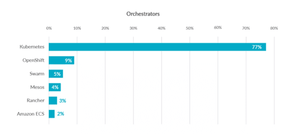
kubernetes简介 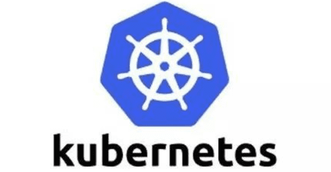
kubernetes，是一个全新的基于容器技术的分布式架构领先方案，是谷歌严格保密十几年的秘密武器——Borg系统的一个开源版本，于2014年9月发布第一个版本，2015年7月发布第一个正式版本。
kubernetes的本质是一组服务器集群 ，它可以在集群的每个节点上运行特定的程序，来对节点中的容器进行管理。目的是实现资源管理的自动化，主要提供了如下的主要功能：
自我修复 ：一旦某一个容器崩溃，能够在1秒中左右迅速启动新的容器弹性伸缩 ：可以根据需要，自动对集群中正在运行的容器数量进行调整服务发现 ：服务可以通过自动发现的形式找到它所依赖的服务负载均衡 ：如果一个服务起动了多个容器，能够自动实现请求的负载均衡版本回退 ：如果发现新发布的程序版本有问题，可以立即回退到原来的版本存储编排 ：可以根据容器自身的需求自动创建存储卷
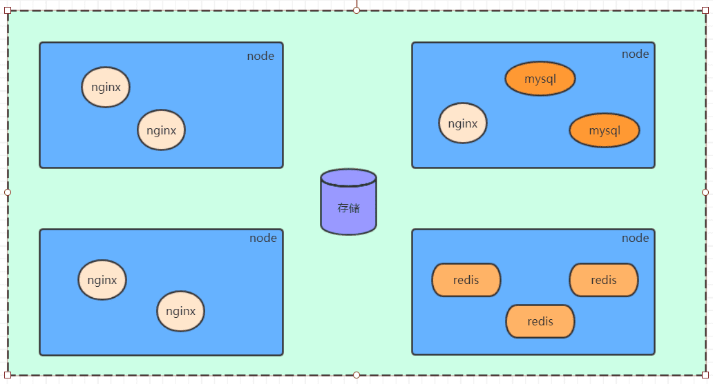
kubernetes组件 一个kubernetes集群主要是由控制节点(master) 、工作节点(node) 构成，每个节点上都会安装不同的组件。
master：集群的控制平面，负责集群的决策 ( 管理 )
ApiServer : 资源操作的唯一入口，接收用户输入的命令，提供认证、授权、API注册和发现等机制
Scheduler : 负责集群资源调度，按照预定的调度策略将Pod调度到相应的node节点上
ControllerManager : 负责维护集群的状态，比如程序部署安排、故障检测、自动扩展、滚动更新等
Etcd ：负责存储集群中各种资源对象的信息
node：集群的数据平面，负责为容器提供运行环境 ( 干活 )
Kubelet : 负责维护容器的生命周期，即通过控制docker，来创建、更新、销毁容器
KubeProxy : 负责提供集群内部的服务发现和负载均衡
Docker : 负责节点上容器的各种操作
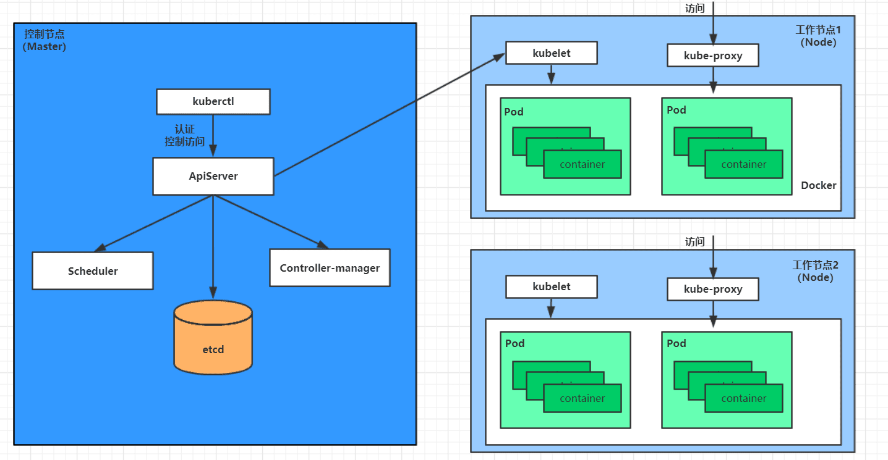
下面，以部署一个nginx服务来说明kubernetes系统各个组件调用关系：
首先要明确，一旦kubernetes环境启动之后，master和node都会将自身的信息存储到etcd数据库中
一个nginx服务的安装请求会首先被发送到master节点的apiServer组件
apiServer组件会调用scheduler组件来决定到底应该把这个服务安装到哪个node节点上
在此时，它会从etcd中读取各个node节点的信息，然后按照一定的算法进行选择，并将结果告知apiServer
apiServer调用controller-manager去调度Node节点安装nginx服务
kubelet接收到指令后，会通知docker，然后由docker来启动一个nginx的pod
pod是kubernetes的最小操作单元，容器必须跑在pod中至此，
一个nginx服务就运行了，如果需要访问nginx，就需要通过kube-proxy来对pod产生访问的代理
这样，外界用户就可以访问集群中的nginx服务了
kubernetes概念 Master ：集群控制节点，每个集群需要至少一个master节点负责集群的管控
Node ：工作负载节点，由master分配容器到这些node工作节点上，然后node节点上的docker负责容器的运行
Pod ：kubernetes的最小控制单元，容器都是运行在pod中的，一个pod中可以有1个或者多个容器
Controller ：控制器，通过它来实现对pod的管理，比如启动pod、停止pod、伸缩pod的数量等等
Service ：pod对外服务的统一入口，下面可以维护者同一类的多个pod
Label ：标签，用于对pod进行分类，同一类pod会拥有相同的标签
NameSpace ：命名空间，用来隔离pod的运行环境
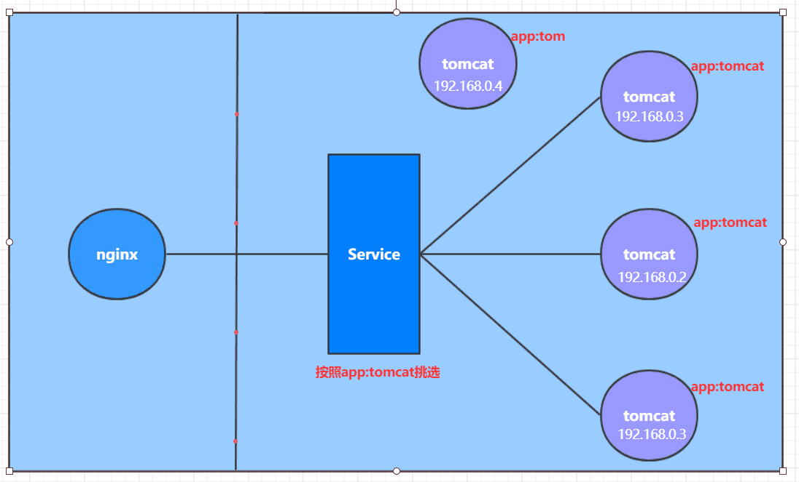
第二章 集群环境搭建 本章节主要介绍如何搭建kubernetes的集群环境
环境规划 集群类型 kubernetes集群大体上分为两类：一主多从 和多主多从 。
一主多从：一台Master节点和多台Node节点，搭建简单，但是有单机故障风险，适合用于测试环境
多主多从：多台Master节点和多台Node节点，搭建麻烦，安全性高，适合用于生产环境
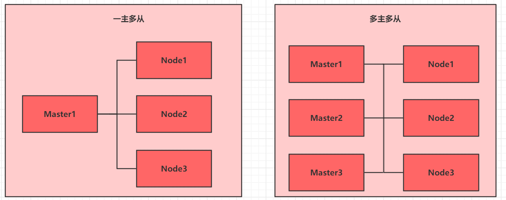
说明：为了测试简单，本次搭建的是 一主两从 类型的集群
安装方式 kubernetes有多种部署方式，目前主流的方式有kubeadm、minikube、二进制包
minikube：一个用于快速搭建单节点kubernetes的工具
kubeadm：一个用于快速搭建kubernetes集群的工具
二进制包 ：从官网下载每个组件的二进制包，依次去安装，此方式对于理解kubernetes组件更加有效
说明：现在需要安装kubernetes的集群环境，但是又不想过于麻烦，所以选择使用kubeadm方式
主机规划
作用
IP地址
操作系统
配置
Master
192.168.109.101
Centos7.5 基础设施服务器
2颗CPU 2G内存 50G硬盘
Node1
192.168.109.102
Centos7.5 基础设施服务器
2颗CPU 2G内存 50G硬盘
Node2
192.168.109.103
Centos7.5 基础设施服务器
2颗CPU 2G内存 50G硬盘
环境搭建 本次环境搭建需要安装三台Centos服务器（一主二从），然后在每台服务器中分别安装docker（18.06.3），kubeadm（1.17.4）、kubelet（1.17.4）、kubectl（1.17.4）程序。
主机安装 安装虚拟机过程中注意下面选项的设置：
环境初始化 1) 检查操作系统的版本
1 2 3 [root @master ~] CentOS Linux release 7.5 .1804 (Core)
2） 主机名解析
为了方便后面集群节点间的直接调用，在这配置一下主机名解析，企业中推荐使用内部DNS服务器
1 2 3 4 192.168 .109.100 master192.168 .109.101 node1192.168 .109.102 node2
3） 时间同步
kubernetes要求集群中的节点时间必须精确一致，这里直接使用chronyd服务从网络同步时间。
企业中建议配置内部的时间同步服务器
1 2 3 4 5 6 [root @master ~] [root @master ~] [root @master ~]
4） 禁用iptables和firewalld服务
kubernetes和docker在运行中会产生大量的iptables规则，为了不让系统规则跟它们混淆，直接关闭系统的规则
1 2 3 4 5 6 [root @master ~] [root @master ~] [root @master ~] [root @master ~]
5） 禁用selinux
selinux是linux系统下的一个安全服务，如果不关闭它，在安装集群中会产生各种各样的奇葩问题
6） 禁用swap分区
swap分区指的是虚拟内存分区，它的作用是在物理内存使用完之后，将磁盘空间虚拟成内存来使用
启用swap设备会对系统的性能产生非常负面的影响，因此kubernetes要求每个节点都要禁用swap设备
但是如果因为某些原因确实不能关闭swap分区，就需要在集群安装过程中通过明确的参数进行配置说明
1 2 3 4 5 UUID=455 cc753-7a60-4c17-a424-7741728c44a1 /boot xfs defaults 0 0 /dev/mapper/centos-home /home xfs defaults 0 0
7）修改linux的内核参数
1 2 3 4 5 6 7 8 9 10 11 12 13 14 net.bridge.bridge-nf-call-ip6tables = 1 net.bridge.bridge-nf-call-iptables = 1 net.ipv4.ip_forward = 1 [root @master ~] [root @master ~] [root @master ~]
8）配置ipvs功能
在kubernetes中service有两种代理模型，一种是基于iptables的，一种是基于ipvs的
两者比较的话，ipvs的性能明显要高一些，但是如果要使用它，需要手动载入ipvs模块
1 2 3 4 5 6 7 8 9 10 11 12 13 14 15 16 17 18 19 20 21 [root @master ~] [root @master ~] modprobe -- ip_vs modprobe -- ip_vs_rr modprobe -- ip_vs_wrr modprobe -- ip_vs_sh modprobe -- nf_conntrack_ipv4 EOF [root @master ~] [root @master ~] [root @master ~]
9） 重启服务器
上面步骤完成之后，需要重新启动linux系统
安装docker 1 2 3 4 5 6 7 8 9 10 11 12 13 14 15 16 17 18 19 20 21 22 23 24 25 26 [root @master ~] [root @master ~] [root @master ~] [root @master ~] [root @master ~] { "exec-opts" : ["native.cgroupdriver=systemd" ], "registry-mirrors" : ["https://kn0t2bca.mirror.aliyuncs.com" ] } EOF [root @master ~] [root @master ~] [root @master ~]
安装kubernetes组件 1 2 3 4 5 6 7 8 9 10 11 12 13 14 15 16 17 18 19 20 21 [kubernetes ] name=Kubernetes baseurl=http://mirrors.aliyun.com/kubernetes/yum/repos/kubernetes-el7-x86_64 enabled=1 gpgcheck=0 repo_gpgcheck=0 gpgkey=http://mirrors.aliyun.com/kubernetes/yum/doc/yum-key .gpg http://mirrors.aliyun.com/kubernetes/yum/doc/rpm-package-key .gpg [root @master ~] KUBELET_CGROUP_ARGS="--cgroup-driver=systemd" KUBE_PROXY_MODE="ipvs" [root @master ~]
准备集群镜像 1 2 3 4 5 6 7 8 9 10 11 12 13 14 15 16 17 18 19 20 [root @master ~] images=( kube-apiserver :v1.17.4 kube-controller-manager :v1.17.4 kube-scheduler :v1.17.4 kube-proxy :v1.17.4 pause:3.1 etcd:3.4 .3 -0 coredns:1.6 .5 ) for imageName in $ {images[@ ]} ; do docker pull registry.cn-hangzhou .aliyuncs.com/google_containers/$imageName docker tag registry.cn-hangzhou .aliyuncs.com/google_containers/$imageName k8s.gcr.io/$imageName docker rmi registry.cn-hangzhou .aliyuncs.com/google_containers/$imageName done
集群初始化 下面开始对集群进行初始化，并将node节点加入到集群中
下面的操作只需要在master节点上执行即可
1 2 3 4 5 6 7 8 9 10 11 [root @master ~] --kubernetes-version =v1.17.4 \ --pod-network-cidr =10.244 .0.0 /16 \ --service-cidr =10.96 .0.0 /12 \ --apiserver-advertise-address =192.168 .109.100 [root @master ~] [root @master ~] [root @master ~]
下面的操作只需要在node节点上执行即可
1 2 3 4 5 6 7 8 9 10 11 12 [root @master ~] --token 8507 uc.o0knircuri8etnw2 \ --discovery-token-ca-cert-hash \ sha256:acc37967fb5b0acf39d7598f8a439cc7dc88f439a3f4d0c9cae88e7901b9d3f [root @master ~] NAME STATUS ROLES AGE VERSION master NotReady master 6 m43s v1.17.4 node1 NotReady <none> 22 s v1.17.4 node2 NotReady <none> 19 s v1.17.4
安装网络插件 kubernetes支持多种网络插件，比如flannel、calico、canal等等，任选一种使用即可，本次选择flannel
下面操作依旧只在master节点执行即可，插件使用的是DaemonSet的控制器，它会在每个节点上都运行
1 2 3 4 5 6 7 8 9 10 11 12 13 14 [root @master ~] [root @master ~] [root @master ~] NAME STATUS ROLES AGE VERSION master Ready master 15 m v1.17.4 node1 Ready <none> 8 m53s v1.17.4 node2 Ready <none> 8 m50s v1.17.4
至此，kubernetes的集群环境搭建完成
服务部署 接下来在kubernetes集群中部署一个nginx程序，测试下集群是否在正常工作。
1 2 3 4 5 6 7 8 9 10 11 12 13 14 15 16 [root @master ~] [root @master ~] [root @master ~] NAME READY STATUS RESTARTS AGE pod/nginx-86c57db685-fdc2k 1 /1 Running 0 18 m NAME TYPE CLUSTER-IP EXTERNAL-IP PORT(S) AGE service/kubernetes ClusterIP 10.96 .0.1 <none> 443 /TCP 82 m service/nginx NodePort 10.104 .121.45 <none> 80 :30073 /TCP 17 m
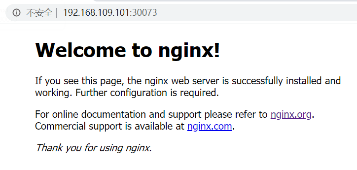
第三章 资源管理 本章节主要介绍yaml语法和kubernetes的资源管理方式
资源管理介绍 在kubernetes中，所有的内容都抽象为资源，用户需要通过操作资源来管理kubernetes。
kubernetes的本质上就是一个集群系统，用户可以在集群中部署各种服务，所谓的部署服务，其实就是在kubernetes集群中运行一个个的容器，并将指定的程序跑在容器中。
kubernetes的最小管理单元是pod而不是容器，所以只能将容器放在Pod中，而kubernetes一般也不会直接管理Pod，而是通过Pod控制器来管理Pod的。
Pod可以提供服务之后，就要考虑如何访问Pod中服务，kubernetes提供了Service资源实现这个功能。
当然，如果Pod中程序的数据需要持久化，kubernetes还提供了各种存储系统。
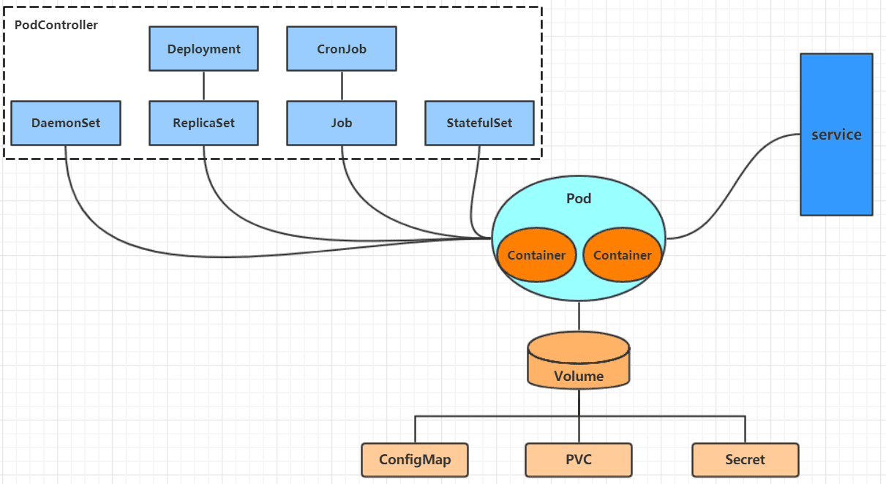
学习kubernetes的核心，就是学习如何对集群上的Pod、Pod控制器、Service、存储等各种资源进行操作
YAML语言介绍 YAML是一个类似 XML、JSON 的标记性语言。它强调以数据 为中心，并不是以标识语言为重点。因而YAML本身的定义比较简单，号称”一种人性化的数据格式语言”。
1 2 3 4 <heima > <age > 15</age > <address > Beijing</address > </heima >
1 2 3 heima: age: 15 address: Beijing
YAML的语法比较简单，主要有下面几个：
大小写敏感
使用缩进表示层级关系
缩进不允许使用tab，只允许空格( 低版本限制 )
缩进的空格数不重要，只要相同层级的元素左对齐即可
‘#’表示注释
YAML支持以下几种数据类型：
纯量：单个的、不可再分的值
对象：键值对的集合，又称为映射（mapping）/ 哈希（hash） / 字典（dictionary）
数组：一组按次序排列的值，又称为序列（sequence） / 列表（list）
1 2 3 4 5 6 7 8 9 10 11 12 13 14 15 16 17 c1: true (或者True) c2: 234 c3: 3.14 c4: ~ c5: 2018-02-17 c6: 2018-02-17T15:02:31+08:00 c7: heima c8: line1 line2
1 2 3 4 5 6 7 heima: age: 15 address: Beijing heima: {age: 15 ,address: Beijing }
1 2 3 4 5 6 7 address: - 顺义 - 昌平 address: [顺义 ,昌平 ]
小提示：
1 书写yaml切记: 后面要加一个空格
2 如果需要将多段yaml配置放在一个文件中，中间要使用---分隔
3 下面是一个yaml转json的网站，可以通过它验证yaml是否书写正确
https://www.json2yaml.com/convert-yaml-to-json
资源管理方式
命令式对象管理：直接使用命令去操作kubernetes资源
kubectl run nginx-pod --image=nginx:1.17.1 --port=80
命令式对象配置：通过命令配置和配置文件去操作kubernetes资源
kubectl create/patch -f nginx-pod.yaml
声明式对象配置：通过apply命令和配置文件去操作kubernetes资源
kubectl apply -f nginx-pod.yaml
类型
操作对象
适用环境
优点
缺点
命令式对象管理
对象
测试
简单
只能操作活动对象，无法审计、跟踪
命令式对象配置
文件
开发
可以审计、跟踪
项目大时，配置文件多，操作麻烦
声明式对象配置
目录
开发
支持目录操作
意外情况下难以调试
命令式对象管理 kubectl命令
kubectl是kubernetes集群的命令行工具，通过它能够对集群本身进行管理，并能够在集群上进行容器化应用的安装部署。kubectl命令的语法如下：
1 kubectl [command] [type] [name] [flags]
comand ：指定要对资源执行的操作，例如create、get、delete
type ：指定资源类型，比如deployment、pod、service
name ：指定资源的名称，名称大小写敏感
flags ：指定额外的可选参数
1 2 3 4 5 6 7 8 kubectl get pod kubectl get pod pod_name kubectl get pod pod_name -o yaml
资源类型
kubernetes中所有的内容都抽象为资源，可以通过下面的命令进行查看:
经常使用的资源有下面这些：
资源分类
资源名称
缩写
资源作用
集群级别资源
nodes
no
集群组成部分
namespaces
ns
隔离Pod
pod资源
pods
po
装载容器
pod资源控制器
replicationcontrollers
rc
控制pod资源
replicasets
rs
控制pod资源
deployments
deploy
控制pod资源
daemonsets
ds
控制pod资源
jobs
控制pod资源
cronjobs
cj
控制pod资源
horizontalpodautoscalers
hpa
控制pod资源
statefulsets
sts
控制pod资源
服务发现资源
services
svc
统一pod对外接口
ingress
ing
统一pod对外接口
存储资源
volumeattachments
存储
persistentvolumes
pv
存储
persistentvolumeclaims
pvc
存储
配置资源
configmaps
cm
配置
secrets
配置
操作
kubernetes允许对资源进行多种操作，可以通过—help查看详细的操作命令
经常使用的操作有下面这些：
命令分类
命令
翻译
命令作用
基本命令
create
创建
创建一个资源
edit
编辑
编辑一个资源
get
获取
获取一个资源
patch
更新
更新一个资源
delete
删除
删除一个资源
explain
解释
展示资源文档
运行和调试
run
运行
在集群中运行一个指定的镜像
expose
暴露
暴露资源为Service
describe
描述
显示资源内部信息
logs
日志
输出容器在 pod 中的日志
attach
缠绕
进入运行中的容器
exec
执行
执行容器中的一个命令
cp
复制
在Pod内外复制文件
rollout
首次展示
管理资源的发布
scale
规模
扩(缩)容Pod的数量
autoscale
自动调整
自动调整Pod的数量
高级命令
apply
rc
通过文件对资源进行配置
label
标签
更新资源上的标签
其他命令
cluster-info
集群信息
显示集群信息
version
版本
显示当前Server和Client的版本
下面以一个namespace / pod的创建和删除简单演示下命令的使用：
1 2 3 4 5 6 7 8 9 10 11 12 13 14 15 16 17 18 19 20 21 22 23 24 25 26 27 28 29 30 [root @master ~] namespace/dev created [root @master ~] NAME STATUS AGE default Active 21 h dev Active 21 s kube-node-lease Active 21 h kube-public Active 21 h kube-system Active 21 h [root @master ~] kubectl run --generator =deployment/apps.v1 is DEPRECATED and will be removed in a future version. Use kubectl run --generator =run-pod /v1 or kubectl create instead. deployment.apps/pod created [root @master ~] NAME READY STATUS RESTARTS AGE pod-864f9875b9-pcw7x 1 /1 Running 0 21 s [root @master ~] pod "pod-864f9875b9-pcw7x" deleted [root @master ~] namespace "dev" deleted
命令式对象配置 命令式对象配置就是使用命令配合配置文件一起来操作kubernetes资源。
1） 创建一个nginxpod.yaml，内容如下：
1 2 3 4 5 6 7 8 9 10 11 12 13 14 15 16 apiVersion: v1 kind: Namespace metadata: name: dev --- apiVersion: v1 kind: Pod metadata: name: nginxpod namespace: dev spec: containers: - name: nginx-containers image: nginx:1.17.1
2）执行create命令，创建资源：
1 2 3 [root @master ~] namespace/dev created pod/nginxpod created
此时发现创建了两个资源对象，分别是namespace和pod
3）执行get命令，查看资源：
1 2 3 4 5 6 [root @master ~] NAME STATUS AGE namespace/dev Active 18 s NAME READY STATUS RESTARTS AGE pod/nginxpod 1 /1 Running 0 17 s
这样就显示了两个资源对象的信息
4）执行delete命令，删除资源：
1 2 3 [root @master ~] namespace "dev" deleted pod "nginxpod" deleted
此时发现两个资源对象被删除了
1 2 总结: 命令式对象配置的方式操作资源，可以简单的认为：命令 + yaml配置文件（里面是命令需要的各种参数）
声明式对象配置 声明式对象配置跟命令式对象配置很相似，但是它只有一个命令apply。
1 2 3 4 5 6 7 8 9 [root @master ~] namespace/dev created pod/nginxpod created [root @master ~] namespace/dev unchanged pod/nginxpod unchanged
1 2 3 4 5 总结: 其实声明式对象配置就是使用apply描述一个资源最终的状态（在yaml中定义状态） 使用apply操作资源： 如果资源不存在，就创建，相当于 kubectl create 如果资源已存在，就更新，相当于 kubectl patch
扩展：kubectl可以在node节点上运行吗 ?
kubectl的运行是需要进行配置的，它的配置文件是$HOME/.kube，如果想要在node节点运行此命令，需要将master上的.kube文件复制到node节点上，即在master节点上执行下面操作：
1 scp -r HOME/.kube node1: HOME/
使用推荐: 三种方式应该怎么用 ?
创建/更新资源 使用声明式对象配置 kubectl apply -f XXX.yaml
删除资源 使用命令式对象配置 kubectl delete -f XXX.yaml
查询资源 使用命令式对象管理 kubectl get(describe) 资源名称
第四章 实战入门 本章节将介绍如何在kubernetes集群中部署一个nginx服务，并且能够对其进行访问。
Namespace Namespace是kubernetes系统中的一种非常重要资源，它的主要作用是用来实现多套环境的资源隔离 或者多租户的资源隔离 。
默认情况下，kubernetes集群中的所有的Pod都是可以相互访问的。但是在实际中，可能不想让两个Pod之间进行互相的访问，那此时就可以将两个Pod划分到不同的namespace下。kubernetes通过将集群内部的资源分配到不同的Namespace中，可以形成逻辑上的”组”，以方便不同的组的资源进行隔离使用和管理。
可以通过kubernetes的授权机制，将不同的namespace交给不同租户进行管理，这样就实现了多租户的资源隔离。此时还能结合kubernetes的资源配额机制，限定不同租户能占用的资源，例如CPU使用量、内存使用量等等，来实现租户可用资源的管理。
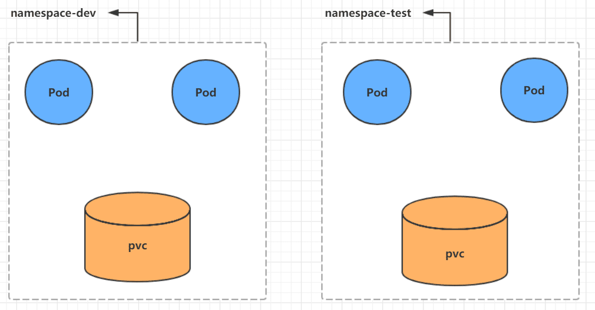
kubernetes在集群启动之后，会默认创建几个namespace
1 2 3 4 5 6 [root @master ~] NAME STATUS AGE default Active 45 h kube-node-lease Active 45 h kube-public Active 45 h kube-system Active 45 h
下面来看namespace资源的具体操作：
查看
1 2 3 4 5 6 7 8 9 10 11 12 13 14 15 16 17 18 19 20 21 22 23 24 25 26 27 28 29 30 31 32 33 34 35 36 37 38 39 40 41 [root @master ~] NAME STATUS AGE default Active 45 h kube-node-lease Active 45 h kube-public Active 45 h kube-system Active 45 h [root @master ~] NAME STATUS AGE default Active 45 h [root @master ~] apiVersion: v1 kind: Namespace metadata: creationTimestamp: "2020-04-05T04:44:16Z" name: default resourceVersion: "151" selfLink: /api/v1/namespaces/default uid: 7405 f73a-e486-43d4-9db6-145f1409f090 spec: finalizers: - kubernetes status: phase: Active [root @master ~] Name: default Labels: <none> Annotations: <none> Status: Active No resource quota. No LimitRange resource.
创建
1 2 3 [root @master ~] namespace/dev created
删除
1 2 3 [root @master ~] namespace "dev" deleted
配置方式
首先准备一个yaml文件：ns-dev.yaml
1 2 3 4 apiVersion: v1 kind: Namespace metadata: name: dev
然后就可以执行对应的创建和删除命令了：
创建：kubectl create -f ns-dev.yaml
删除：kubectl delete -f ns-dev.yaml
Pod Pod是kubernetes集群进行管理的最小单元，程序要运行必须部署在容器中，而容器必须存在于Pod中。
Pod可以认为是容器的封装，一个Pod中可以存在一个或者多个容器。
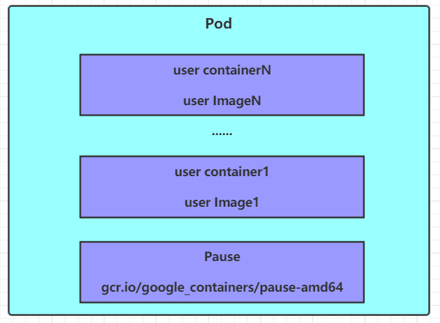
kubernetes在集群启动之后，集群中的各个组件也都是以Pod方式运行的。可以通过下面命令查看：
1 2 3 4 5 6 7 8 9 10 11 12 [root @master ~] NAMESPACE NAME READY STATUS RESTARTS AGE kube-system coredns-6955765f44-68g6v 1 /1 Running 0 2 d1h kube-system coredns-6955765f44-cs5r8 1 /1 Running 0 2 d1h kube-system etcd-master 1 /1 Running 0 2 d1h kube-system kube-apiserver-master 1 /1 Running 0 2 d1h kube-system kube-controller-manager-master 1 /1 Running 0 2 d1h kube-system kube-flannel-ds-amd64-47r25 1 /1 Running 0 2 d1h kube-system kube-flannel-ds-amd64-ls5lh 1 /1 Running 0 2 d1h kube-system kube-proxy-685tk 1 /1 Running 0 2 d1h kube-system kube-proxy-87spt 1 /1 Running 0 2 d1h kube-system kube-scheduler-master 1 /1 Running 0 2 d1h
创建并运行
kubernetes没有提供单独运行Pod的命令，都是通过Pod控制器来实现的
1 2 3 4 5 6 [root @master ~] deployment.apps/nginx created
查看pod信息
1 2 3 4 5 6 7 8 9 10 11 12 13 14 15 16 17 18 19 20 21 22 23 24 25 26 27 28 29 30 31 32 33 34 35 36 37 38 39 40 41 42 43 44 45 46 47 48 49 50 51 52 53 54 55 56 57 [root @master ~] NAME READY STATUS RESTARTS AGE nginx-5ff7956ff6-fg2db 1 /1 Running 0 43 s [root @master ~] Name: nginx-5ff7956ff6-fg2db Namespace: dev Priority: 0 Node: node1/192.168 .109.101 Start Time: Wed, 08 Apr 2020 09 :29 :24 +0800 Labels: pod-template-hash =5 ff7956ff6 run=nginx Annotations: <none> Status: Running IP: 10.244 .1.23 IPs: IP: 10.244 .1.23 Controlled By: ReplicaSet/nginx-5ff7956ff6 Containers: nginx: Container ID: docker://4 c62b8c0648d2512380f4ffa5da2c99d16e05634979973449c98e9b829f6253c Image: nginx:1.17 .1 Image ID: docker-pullable ://nginx@sha256:485 b610fefec7ff6c463ced9623314a04ed67e3945b9c08d7e53a47f6d108dc7 Port: 80 /TCP Host Port: 0 /TCP State: Running Started: Wed, 08 Apr 2020 09 :30 :01 +0800 Ready: True Restart Count: 0 Environment: <none> Mounts: /var/run/secrets/kubernetes.io/serviceaccount from default-token-hwvvw (ro) Conditions: Type Status Initialized True Ready True ContainersReady True PodScheduled True Volumes: default-token-hwvvw : Type : Secret (a volume populated by a Secret) SecretName: default-token-hwvvw Optional: false QoS Class : BestEffort Node -Selectors : <none >Tolerations : node .kubernetes .io /not -ready :NoExecute for 300s node .kubernetes .io /unreachable :NoExecute for 300s Events : Type Reason Age From Message ---- ------ ---- ---- ------- Normal Scheduled <unknown > default -scheduler Successfully assigned dev /nginx -5ff7956ff6 -fg2db to node1 Normal Pulling 4m11s kubelet , node1 Pulling image "nginx :1.17.1" Normal Pulled 3m36s kubelet , node1 Successfully pulled image "nginx :1.17.1" Normal Created 3m36s kubelet , node1 Created container nginx Normal Started 3m36s kubelet , node1 Started container nginx
访问Pod
1 2 3 4 5 6 7 8 9 10 11 12 13 14 15 16 [root @master ~] NAME READY STATUS RESTARTS AGE IP NODE ... nginx-5ff7956ff6-fg2db 1 /1 Running 0 190 s 10.244 .1.23 node1 ... [root @master ~] <!DOCTYPE html> <html> <head> <title>Welcome to nginx!</title> </head> <body> <p><em>Thank you for using nginx.</em></p> </body> </html>
删除指定Pod
1 2 3 4 5 6 7 8 9 10 11 12 13 14 15 16 17 18 19 20 21 22 23 24 [root @master ~] pod "nginx-5ff7956ff6-fg2db" deleted [root @master ~] NAME READY STATUS RESTARTS AGE nginx-5ff7956ff6-jj4ng 1 /1 Running 0 21 s [root @master ~] NAME READY UP-TO-DATE AVAILABLE AGE nginx 1 /1 1 1 9 m7s [root @master ~] deployment.apps "nginx" deleted [root @master ~] No resources found in dev namespace.
配置操作
创建一个pod-nginx.yaml，内容如下：
1 2 3 4 5 6 7 8 9 10 11 12 13 apiVersion: v1 kind: Pod metadata: name: nginx namespace: dev spec: containers: - image: nginx:1.17.1 name: pod ports: - name: nginx-port containerPort: 80 protocol: TCP
然后就可以执行对应的创建和删除命令了：
创建：kubectl create -f pod-nginx.yaml
删除：kubectl delete -f pod-nginx.yaml
Label Label是kubernetes系统中的一个重要概念。它的作用就是在资源上添加标识，用来对它们进行区分和选择。
Label的特点：
一个Label会以key/value键值对的形式附加到各种对象上，如Node、Pod、Service等等
一个资源对象可以定义任意数量的Label ，同一个Label也可以被添加到任意数量的资源对象上去
Label通常在资源对象定义时确定，当然也可以在对象创建后动态添加或者删除
可以通过Label实现资源的多维度分组，以便灵活、方便地进行资源分配、调度、配置、部署等管理工作。
一些常用的Label 示例如下：
版本标签：”version”:”release”, “version”:”stable”……
环境标签：”environment”:”dev”，”environment”:”test”，”environment”:”pro”
架构标签：”tier”:”frontend”，”tier”:”backend”
标签定义完毕之后，还要考虑到标签的选择，这就要使用到Label Selector，即：
Label用于给某个资源对象定义标识
Label Selector用于查询和筛选拥有某些标签的资源对象
当前有两种Label Selector：
基于等式的Label Selector
name = slave: 选择所有包含Label中key=”name”且value=”slave”的对象
env != production: 选择所有包括Label中的key=”env”且value不等于”production”的对象
基于集合的Label Selector
name in (master, slave): 选择所有包含Label中的key=”name”且value=”master”或”slave”的对象
name not in (frontend): 选择所有包含Label中的key=”name”且value不等于”frontend”的对象
标签的选择条件可以使用多个，此时将多个Label Selector进行组合，使用逗号”,”进行分隔即可。例如：
name=slave，env!=production
name not in (frontend)，env!=production
命令方式
1 2 3 4 5 6 7 8 9 10 11 12 13 14 15 16 17 18 19 20 21 22 23 [root @master ~] pod/nginx-pod labeled [root @master ~] pod/nginx-pod labeled [root @master ~] NAME READY STATUS RESTARTS AGE LABELS nginx-pod 1 /1 Running 0 10 m version=2.0 [root @master ~] NAME READY STATUS RESTARTS AGE LABELS nginx-pod 1 /1 Running 0 17 m version=2.0 [root @master ~] No resources found in dev namespace. [root @master ~] pod/nginx-pod labeled
配置方式
1 2 3 4 5 6 7 8 9 10 11 12 13 14 15 16 apiVersion: v1 kind: Pod metadata: name: nginx namespace: dev labels: version: "3.0" env: "test" spec: containers: - image: nginx:1.17.1 name: pod ports: - name: nginx-port containerPort: 80 protocol: TCP
然后就可以执行对应的更新命令了：kubectl apply -f pod-nginx.yaml
Deployment 在kubernetes中，Pod是最小的控制单元，但是kubernetes很少直接控制Pod，一般都是通过Pod控制器来完成的。Pod控制器用于pod的管理，确保pod资源符合预期的状态，当pod的资源出现故障时，会尝试进行重启或重建pod。
在kubernetes中Pod控制器的种类有很多，本章节只介绍一种：Deployment。
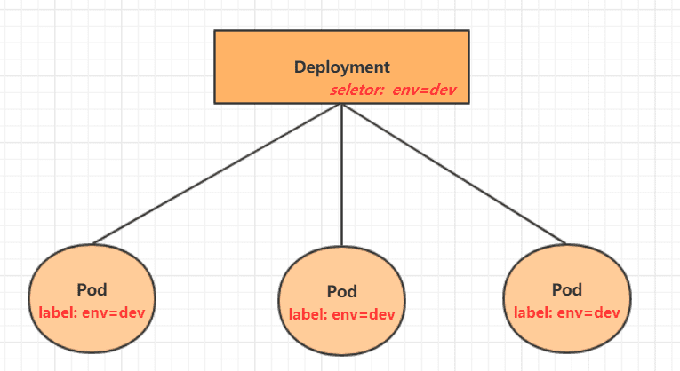
命令操作
1 2 3 4 5 6 7 8 9 10 11 12 13 14 15 16 17 18 19 20 21 22 23 24 25 26 27 28 29 30 31 32 33 34 35 36 37 38 39 40 41 42 43 44 45 46 47 48 49 50 51 52 53 54 55 56 57 58 59 60 61 62 63 [root @master ~] deployment.apps/nginx created [root @master ~] NAME READY STATUS RESTARTS AGE nginx-5ff7956ff6-6k8cb 1 /1 Running 0 19 s nginx-5ff7956ff6-jxfjt 1 /1 Running 0 19 s nginx-5ff7956ff6-v6jqw 1 /1 Running 0 19 s [root @master ~] NAME READY UP-TO-DATE AVAILABLE AGE nginx 3 /3 3 3 2 m42s [root @master ~] NAME READY UP-TO-DATE AVAILABLE AGE CONTAINERS IMAGES SELECTOR nginx 3 /3 3 3 2 m51s nginx nginx:1.17 .1 run=nginx [root @master ~] Name: nginx Namespace: dev CreationTimestamp: Wed, 08 Apr 2020 11 :14 :14 +0800 Labels: run=nginx Annotations: deployment.kubernetes.io/revision: 1 Selector: run=nginx Replicas: 3 desired | 3 updated | 3 total | 3 available | 0 unavailable StrategyType: RollingUpdate MinReadySeconds: 0 RollingUpdateStrategy: 25 % max unavailable, 25 % max surge Pod Template: Labels: run=nginx Containers: nginx: Image: nginx:1.17 .1 Port: 80 /TCP Host Port: 0 /TCP Environment: <none> Mounts: <none> Volumes: <none> Conditions: Type Status Reason ---- ------ ------ Available True MinimumReplicasAvailable Progressing True NewReplicaSetAvailable OldReplicaSets: <none> NewReplicaSet: nginx-5ff7956ff6 (3 /3 replicas created) Events: Type Reason Age From Message ---- ------ ---- ---- ------- Normal ScalingReplicaSet 5 m43s deployment-controller Scaled up replicaset nginx-5ff7956ff6 to 3 [root @master ~] deployment.apps "nginx" deleted
配置操作
创建一个deploy-nginx.yaml，内容如下：
1 2 3 4 5 6 7 8 9 10 11 12 13 14 15 16 17 18 19 20 21 apiVersion: apps/v1 kind: Deployment metadata: name: nginx namespace: dev spec: replicas: 3 selector: matchLabels: run: nginx template: metadata: labels: run: nginx spec: containers: - image: nginx:1.17.1 name: nginx ports: - containerPort: 80 protocol: TCP
然后就可以执行对应的创建和删除命令了：
创建：kubectl create -f deploy-nginx.yaml
删除：kubectl delete -f deploy-nginx.yaml
Service 通过上节课的学习，已经能够利用Deployment来创建一组Pod来提供具有高可用性的服务。
虽然每个Pod都会分配一个单独的Pod IP，然而却存在如下两问题：
Pod IP 会随着Pod的重建产生变化
Pod IP 仅仅是集群内可见的虚拟IP，外部无法访问
这样对于访问这个服务带来了难度。因此，kubernetes设计了Service来解决这个问题。
Service可以看作是一组同类Pod对外的访问接口 。借助Service，应用可以方便地实现服务发现和负载均衡。
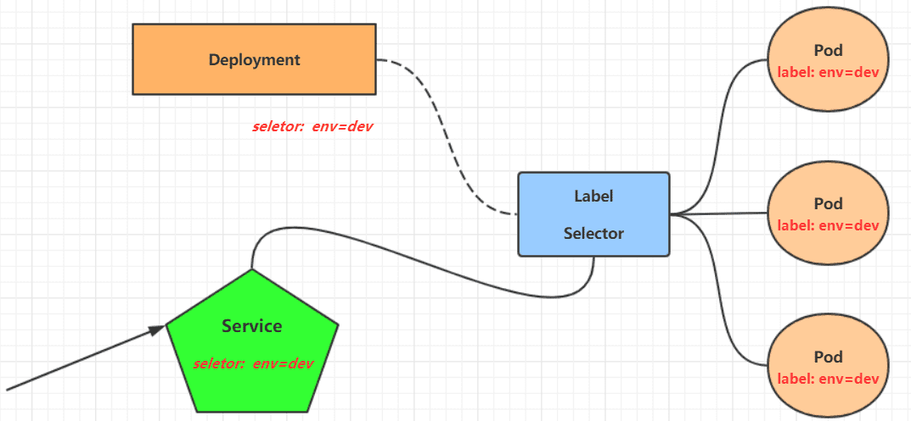
操作一：创建集群内部可访问的Service
1 2 3 4 5 6 7 8 9 10 11 12 13 14 15 16 17 18 19 20 21 22 [root @master ~] service/svc-nginx1 exposed [root @master ~] NAME TYPE CLUSTER-IP EXTERNAL-IP PORT(S) AGE SELECTOR svc-nginx1 ClusterIP 10.109 .179.231 <none> 80 /TCP 3 m51s run=nginx [root @master ~] <!DOCTYPE html> <html> <head> <title>Welcome to nginx!</title> </head> <body> <h1>Welcome to nginx!</h1> ....... </body> </html>
操作二：创建集群外部也可访问的Service
1 2 3 4 5 6 7 8 9 10 11 12 13 [root @master ~] service/svc-nginx2 exposed [root @master ~] NAME TYPE CLUSTER-IP EXTERNAL-IP PORT(S) AGE SELECTOR svc-nginx2 NodePort 10.100 .94.0 <none> 80 :31928 /TCP 9 s run=nginx http://192.168 .109.100 :31928 /
删除Service
配置方式
创建一个svc-nginx.yaml，内容如下：
1 2 3 4 5 6 7 8 9 10 11 12 13 14 apiVersion: v1 kind: Service metadata: name: svc-nginx namespace: dev spec: clusterIP: 10.109 .179 .231 ports: - port: 80 protocol: TCP targetPort: 80 selector: run: nginx type: ClusterIP
然后就可以执行对应的创建和删除命令了：
创建：kubectl create -f svc-nginx.yaml
删除：kubectl delete -f svc-nginx.yaml
小结
至此，已经掌握了Namespace、Pod、Deployment、Service资源的基本操作，有了这些操作，就可以在kubernetes集群中实现一个服务的简单部署和访问了，但是如果想要更好的使用kubernetes，就需要深入学习这几种资源的细节和原理。
第五章 Pod详解 本章节将详细介绍Pod资源的各种配置（yaml）和原理。
Pod介绍 Pod结构
每个Pod中都可以包含一个或者多个容器，这些容器可以分为两类：
Pod定义 下面是Pod的资源清单：
1 2 3 4 5 6 7 8 9 10 11 12 13 14 15 16 17 18 19 20 21 22 23 24 25 26 27 28 29 30 31 32 33 34 35 36 37 38 39 40 41 42 43 44 45 46 47 48 49 50 51 52 53 54 55 56 57 58 59 60 61 62 63 64 65 66 67 68 69 70 71 72 73 74 75 76 77 78 apiVersion: v1 kind: Pod metadata: name: string namespace: string labels: - name: string spec: containers: - name: string image: string imagePullPolicy: [ Always|Never|IfNotPresent ] command: [string ] args: [string ] workingDir: string volumeMounts: - name: string mountPath: string readOnly: boolean ports: - name: string containerPort: int hostPort: int protocol: string env: - name: string value: string resources: limits: cpu: string memory: string requests: cpu: string memory: string lifecycle: postStart: preStop: livenessProbe: exec: command: [string ] httpGet: path: string port: number host: string scheme: string HttpHeaders: - name: string value: string tcpSocket: port: number initialDelaySeconds: 0 timeoutSeconds: 0 periodSeconds: 0 successThreshold: 0 failureThreshold: 0 securityContext: privileged: false restartPolicy: [Always | Never | OnFailure ] nodeName: <string> nodeSelector: obeject imagePullSecrets: - name: string hostNetwork: false volumes: - name: string emptyDir: {} hostPath: string path: string secret: scretname: string items: - key: string path: string configMap: name: string items: - key: string path: string
1 2 3 4 5 6 7 8 9 10 11 12 13 14 15 16 17 18 19 20 21 22 23 24 25 26 27 28 29 30 31 32 33 34 35 [root @master ~] KIND: Pod VERSION: v1 FIELDS: apiVersion <string> kind <string> metadata <Object> spec <Object> status <Object> [root @master ~] KIND: Pod VERSION: v1 RESOURCE: metadata <Object> FIELDS: annotations <map[string ]string> clusterName <string> creationTimestamp <string> deletionGracePeriodSeconds <integer> deletionTimestamp <string> finalizers <[]string> generateName <string> generation <integer> labels <map[string ]string> managedFields <[]Object> name <string> namespace <string> ownerReferences <[]Object> resourceVersion <string> selfLink <string> uid <string>
在kubernetes中基本所有资源的一级属性都是一样的，主要包含5部分：
apiVersion \ 版本，由kubernetes内部定义，版本号必须可以用 kubectl api-versions 查询到
kind \ 类型，由kubernetes内部定义，版本号必须可以用 kubectl api-resources 查询到
metadata \ 元数据，主要是资源标识和说明，常用的有name、namespace、labels等
spec \ 描述，这是配置中最重要的一部分，里面是对各种资源配置的详细描述
status \ 状态信息，里面的内容不需要定义，由kubernetes自动生成
在上面的属性中，spec是接下来研究的重点，继续看下它的常见子属性:
containers <[]Object> 容器列表，用于定义容器的详细信息
nodeName \ 根据nodeName的值将pod调度到指定的Node节点上
nodeSelector 根据NodeSelector中定义的信息选择将该Pod调度到包含这些label的Node 上
hostNetwork \ 是否使用主机网络模式，默认为false，如果设置为true，表示使用宿主机网络
volumes <[]Object> 存储卷，用于定义Pod上面挂在的存储信息
restartPolicy \ 重启策略，表示Pod在遇到故障的时候的处理策略
Pod配置 本小节主要来研究pod.spec.containers属性，这也是pod配置中最为关键的一项配置。
1 2 3 4 5 6 7 8 9 10 11 12 13 [root @master ~] KIND: Pod VERSION: v1 RESOURCE: containers <[]Object> FIELDS: name <string> image <string> imagePullPolicy <string> command <[]string> args <[]string> env <[]Object> ports <[]Object> resources <Object>
基本配置 创建pod-base.yaml文件，内容如下：
1 2 3 4 5 6 7 8 9 10 11 12 13 apiVersion: v1 kind: Pod metadata: name: pod-base namespace: dev labels: user: heima spec: containers: - name: nginx image: nginx:1.17.1 - name: busybox image: busybox:1.30
上面定义了一个比较简单Pod的配置，里面有两个容器：
nginx：用1.17.1版本的nginx镜像创建，（nginx是一个轻量级web容器）
busybox：用1.30版本的busybox镜像创建，（busybox是一个小巧的linux命令集合）
1 2 3 4 5 6 7 8 9 10 11 12 13 14 [root @master pod ] pod/pod-base created [root @master pod ] NAME READY STATUS RESTARTS AGE pod-base 1 /2 Running 4 95 s [root @master pod ]
镜像拉取 创建pod-imagepullpolicy.yaml文件，内容如下：
1 2 3 4 5 6 7 8 9 10 11 12 apiVersion: v1 kind: Pod metadata: name: pod-imagepullpolicy namespace: dev spec: containers: - name: nginx image: nginx:1.17.1 imagePullPolicy: Always - name: busybox image: busybox:1.30
imagePullPolicy，用于设置镜像拉取策略，kubernetes支持配置三种拉取策略：
Always：总是从远程仓库拉取镜像（一直远程下载）
IfNotPresent：本地有则使用本地镜像，本地没有则从远程仓库拉取镜像（本地有就本地 本地没远程下载）
Never：只使用本地镜像，从不去远程仓库拉取，本地没有就报错 （一直使用本地）
默认值说明：
如果镜像tag为具体版本号， 默认策略是：IfNotPresent
如果镜像tag为：latest（最终版本） ，默认策略是always
1 2 3 4 5 6 7 8 9 10 11 12 13 14 15 16 17 18 19 [root @master pod ] pod/pod-imagepullpolicy created [root @master pod ] ...... Events: Type Reason Age From Message ---- ------ ---- ---- ------- Normal Scheduled <unknown> default-scheduler Successfully assigned dev/pod-imagePullPolicy to node1 Normal Pulling 32 s kubelet, node1 Pulling image "nginx:1.17.1" Normal Pulled 26 s kubelet, node1 Successfully pulled image "nginx:1.17.1" Normal Created 26 s kubelet, node1 Created container nginx Normal Started 25 s kubelet, node1 Started container nginx Normal Pulled 7 s (x3 over 25 s) kubelet, node1 Container image "busybox:1.30" already present on machine Normal Created 7 s (x3 over 25 s) kubelet, node1 Created container busybox Normal Started 7 s (x3 over 25 s) kubelet, node1 Started container busybox
启动命令 在前面的案例中，一直有一个问题没有解决，就是的busybox容器一直没有成功运行，那么到底是什么原因导致这个容器的故障呢？
原来busybox并不是一个程序，而是类似于一个工具类的集合，kubernetes集群启动管理后，它会自动关闭。解决方法就是让其一直在运行，这就用到了command配置。
创建pod-command.yaml文件，内容如下：
1 2 3 4 5 6 7 8 9 10 11 12 apiVersion: v1 kind: Pod metadata: name: pod-command namespace: dev spec: containers: - name: nginx image: nginx:1.17.1 - name: busybox image: busybox:1.30 command: ["/bin/sh" ,"-c" ,"touch /tmp/hello.txt;while true;do /bin/echo $(date +%T) >> /tmp/hello.txt; sleep 3; done;" ]
command，用于在pod中的容器初始化完毕之后运行一个命令。
稍微解释下上面命令的意思：
“/bin/sh”,”-c”, 使用sh执行命令
touch /tmp/hello.txt; 创建一个/tmp/hello.txt 文件
while true;do /bin/echo $(date +%T) >> /tmp/hello.txt; sleep 3; done; 每隔3秒向文件中写入当前时间
1 2 3 4 5 6 7 8 9 10 11 12 13 14 15 16 17 18 19 [root @master pod ] pod/pod-command created [root @master pod ] NAME READY STATUS RESTARTS AGE pod-command 2 /2 Runing 0 2 s [root @master pod ] / 13 :35 :35 13 :35 :38 13 :35 :41
1 2 3 4 5 6 特别说明： 通过上面发现command已经可以完成启动命令和传递参数的功能，为什么这里还要提供一个args选项，用于传递参数呢?这其实跟docker有点关系，kubernetes中的command、args两项其实是实现覆盖Dockerfile中ENTRYPOINT的功能。 1 如果command和args均没有写，那么用Dockerfile的配置。 2 如果command写了，但args没有写，那么Dockerfile默认的配置会被忽略，执行输入的command 3 如果command没写，但args写了，那么Dockerfile中配置的ENTRYPOINT的命令会被执行，使用当前args的参数 4 如果command和args都写了，那么Dockerfile的配置被忽略，执行command并追加上args参数
环境变量 创建pod-env.yaml文件，内容如下：
1 2 3 4 5 6 7 8 9 10 11 12 13 14 15 apiVersion: v1 kind: Pod metadata: name: pod-env namespace: dev spec: containers: - name: busybox image: busybox:1.30 command: ["/bin/sh" ,"-c" ,"while true;do /bin/echo $(date +%T);sleep 60; done;" ] env: - name: "username" value: "admin" - name: "password" value: "123456"
env，环境变量，用于在pod中的容器设置环境变量。
1 2 3 4 5 6 7 8 9 10 [root @master ~] pod/pod-env created [root @master ~] / admin / 123456
这种方式不是很推荐，推荐将这些配置单独存储在配置文件中，这种方式将在后面介绍。
端口设置 本小节来介绍容器的端口设置，也就是containers的ports选项。
首先看下ports支持的子选项：
1 2 3 4 5 6 7 8 9 10 [root @master ~] KIND: Pod VERSION: v1 RESOURCE: ports <[]Object> FIELDS: name <string> containerPort<integer> hostPort <integer> hostIP <string> protocol <string>
接下来，编写一个测试案例，创建pod-ports.yaml
1 2 3 4 5 6 7 8 9 10 11 12 13 apiVersion: v1 kind: Pod metadata: name: pod-ports namespace: dev spec: containers: - name: nginx image: nginx:1.17.1 ports: - name: nginx-port containerPort: 80 protocol: TCP
1 2 3 4 5 6 7 8 9 10 11 12 13 14 15 16 17 18 [root @master ~] pod/pod-ports created [root @master ~] ...... spec: containers: - image: nginx:1.17 .1 imagePullPolicy: IfNotPresent name: nginx ports: - containerPort: 80 name: nginx-port protocol: TCP ......
访问容器中的程序需要使用的是podIp:containerPort
资源配额 容器中的程序要运行，肯定是要占用一定资源的，比如cpu和内存等，如果不对某个容器的资源做限制，那么它就可能吃掉大量资源，导致其它容器无法运行。针对这种情况，kubernetes提供了对内存和cpu的资源进行配额的机制，这种机制主要通过resources选项实现，他有两个子选项：
可以通过上面两个选项设置资源的上下限。
接下来，编写一个测试案例，创建pod-resources.yaml
1 2 3 4 5 6 7 8 9 10 11 12 13 14 15 16 apiVersion: v1 kind: Pod metadata: name: pod-resources namespace: dev spec: containers: - name: nginx image: nginx:1.17.1 resources: limits: cpu: "2" memory: "10Gi" requests: cpu: "1" memory: "10Mi"
在这对cpu和memory的单位做一个说明：
1 2 3 4 5 6 7 8 9 10 11 12 13 14 15 16 17 18 19 20 21 22 23 24 25 26 27 28 29 [root @master ~] pod/pod-resources created [root @master ~] NAME READY STATUS RESTARTS AGE pod-resources 1 /1 Running 0 39 s [root @master ~] pod "pod-resources" deleted [root @master ~] [root @master ~] pod/pod-resources created [root @master ~] NAME READY STATUS RESTARTS AGE pod-resources 0 /2 Pending 0 20 s [root @master ~] ...... Warning FailedScheduling <unknown> default-scheduler 0 /2 nodes are available: 2 Insufficient memory.(内存不足)
Pod生命周期 我们一般将pod对象从创建至终的这段时间范围称为pod的生命周期，它主要包含下面的过程：
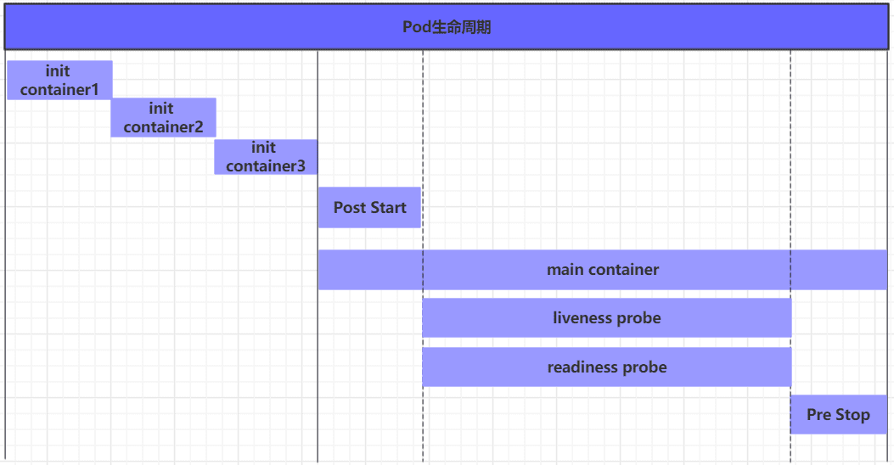
在整个生命周期中，Pod会出现5种状态 （相位 ），分别如下：
挂起（Pending）：apiserver已经创建了pod资源对象，但它尚未被调度完成或者仍处于下载镜像的过程中
运行中（Running）：pod已经被调度至某节点，并且所有容器都已经被kubelet创建完成
成功（Succeeded）：pod中的所有容器都已经成功终止并且不会被重启
失败（Failed）：所有容器都已经终止，但至少有一个容器终止失败，即容器返回了非0值的退出状态
未知（Unknown）：apiserver无法正常获取到pod对象的状态信息，通常由网络通信失败所导致
创建和终止 pod的创建过程
用户通过kubectl或其他api客户端提交需要创建的pod信息给apiServer
apiServer开始生成pod对象的信息，并将信息存入etcd，然后返回确认信息至客户端
apiServer开始反映etcd中的pod对象的变化，其它组件使用watch机制来跟踪检查apiServer上的变动
scheduler发现有新的pod对象要创建，开始为Pod分配主机并将结果信息更新至apiServer
node节点上的kubelet发现有pod调度过来，尝试调用docker启动容器，并将结果回送至apiServer
apiServer将接收到的pod状态信息存入etcd中
pod的终止过程
用户向apiServer发送删除pod对象的命令
apiServcer中的pod对象信息会随着时间的推移而更新，在宽限期内（默认30s），pod被视为dead
将pod标记为terminating状态
kubelet在监控到pod对象转为terminating状态的同时启动pod关闭过程
端点控制器监控到pod对象的关闭行为时将其从所有匹配到此端点的service资源的端点列表中移除
如果当前pod对象定义了preStop钩子处理器，则在其标记为terminating后即会以同步的方式启动执行
pod对象中的容器进程收到停止信号
宽限期结束后，若pod中还存在仍在运行的进程，那么pod对象会收到立即终止的信号
kubelet请求apiServer将此pod资源的宽限期设置为0从而完成删除操作，此时pod对于用户已不可见
初始化容器 初始化容器是在pod的主容器启动之前要运行的容器，主要是做一些主容器的前置工作，它具有两大特征：
初始化容器必须运行完成直至结束，若某初始化容器运行失败，那么kubernetes需要重启它直到成功完成
初始化容器必须按照定义的顺序执行，当且仅当前一个成功之后，后面的一个才能运行
初始化容器有很多的应用场景，下面列出的是最常见的几个：
提供主容器镜像中不具备的工具程序或自定义代码
初始化容器要先于应用容器串行启动并运行完成，因此可用于延后应用容器的启动直至其依赖的条件得到满足
接下来做一个案例，模拟下面这个需求：
假设要以主容器来运行nginx，但是要求在运行nginx之前先要能够连接上mysql和redis所在服务器
为了简化测试，事先规定好mysql(192.168.109.201)和redis(192.168.109.202)服务器的地址
创建pod-initcontainer.yaml，内容如下：
1 2 3 4 5 6 7 8 9 10 11 12 13 14 15 16 17 18 19 apiVersion: v1 kind: Pod metadata: name: pod-initcontainer namespace: dev spec: containers: - name: main-container image: nginx:1.17.1 ports: - name: nginx-port containerPort: 80 initContainers: - name: test-mysql image: busybox:1.30 command: ['sh' , '-c' , 'until ping 192.168.109.201 -c 1 ; do echo waiting for mysql...; sleep 2; done;' ] - name: test-redis image: busybox:1.30 command: ['sh' , '-c' , 'until ping 192.168.109.202 -c 1 ; do echo waiting for reids...; sleep 2; done;' ]
1 2 3 4 5 6 7 8 9 10 11 12 13 14 15 16 17 18 19 20 21 22 23 24 25 26 27 28 [root @master ~] pod/pod-initcontainer created root@master ~] ........ Events: Type Reason Age From Message ---- ------ ---- ---- ------- Normal Scheduled 49 s default-scheduler Successfully assigned dev/pod-initcontainer to node1 Normal Pulled 48 s kubelet, node1 Container image "busybox:1.30" already present on machine Normal Created 48 s kubelet, node1 Created container test-mysql Normal Started 48 s kubelet, node1 Started container test-mysql [root @master ~] NAME READY STATUS RESTARTS AGE pod-initcontainer 0 /1 Init:0 /2 0 15 s pod-initcontainer 0 /1 Init:1 /2 0 52 s pod-initcontainer 0 /1 Init:1 /2 0 53 s pod-initcontainer 0 /1 PodInitializing 0 89 s pod-initcontainer 1 /1 Running 0 90 s [root @master ~] [root @master ~]
钩子函数 钩子函数能够感知自身生命周期中的事件，并在相应的时刻到来时运行用户指定的程序代码。
kubernetes在主容器的启动之后和停止之前提供了两个钩子函数：
post start：容器创建之后执行，如果失败了会重启容器
pre stop ：容器终止之前执行，执行完成之后容器将成功终止，在其完成之前会阻塞删除容器的操作
钩子处理器支持使用下面三种方式定义动作：
接下来，以exec方式为例，演示下钩子函数的使用，创建pod-hook-exec.yaml文件，内容如下：
1 2 3 4 5 6 7 8 9 10 11 12 13 14 15 16 17 18 19 apiVersion: v1 kind: Pod metadata: name: pod-hook-exec namespace: dev spec: containers: - name: main-container image: nginx:1.17.1 ports: - name: nginx-port containerPort: 80 lifecycle: postStart: exec: command: ["/bin/sh" , "-c" , "echo postStart... > /usr/share/nginx/html/index.html" ] preStop: exec: command: ["/usr/sbin/nginx" ,"-s" ,"quit" ]
1 2 3 4 5 6 7 8 9 10 11 12 [root @master ~] pod/pod-hook-exec created [root @master ~] NAME READY STATUS RESTARTS AGE IP NODE pod-hook-exec 1 /1 Running 0 29 s 10.244 .2.48 node2 [root @master ~] postStart...
容器探测 容器探测用于检测容器中的应用实例是否正常工作，是保障业务可用性的一种传统机制。如果经过探测，实例的状态不符合预期，那么kubernetes就会把该问题实例” 摘除 “，不承担业务流量。kubernetes提供了两种探针来实现容器探测，分别是：
livenessProbe 决定是否重启容器，readinessProbe 决定是否将请求转发给容器。
上面两种探针目前均支持三种探测方式：
Exec命令：在容器内执行一次命令，如果命令执行的退出码为0，则认为程序正常，否则不正常
1 2 3 4 5 6 7 …… livenessProbe: exec: command: - cat - /tmp/healthy ……
TCPSocket：将会尝试访问一个用户容器的端口，如果能够建立这条连接，则认为程序正常，否则不正常
1 2 3 4 5 …… livenessProbe: tcpSocket: port: 8080 ……
HTTPGet：调用容器内Web应用的URL，如果返回的状态码在200和399之间，则认为程序正常，否则不正常
1 2 3 4 5 6 7 8 …… livenessProbe: httpGet: path: / port: 80 host: 127.0 .0 .1 scheme: HTTP ……
下面以liveness probes为例，做几个演示：
方式一：Exec
创建pod-liveness-exec.yaml
1 2 3 4 5 6 7 8 9 10 11 12 13 14 15 apiVersion: v1 kind: Pod metadata: name: pod-liveness-exec namespace: dev spec: containers: - name: nginx image: nginx:1.17.1 ports: - name: nginx-port containerPort: 80 livenessProbe: exec: command: ["/bin/cat" ,"/tmp/hello.txt" ]
创建pod，观察效果
1 2 3 4 5 6 7 8 9 10 11 12 13 14 15 16 17 18 19 20 [root @master ~] pod/pod-liveness-exec created [root @master ~] ...... Normal Created 20 s (x2 over 50 s) kubelet, node1 Created container nginx Normal Started 20 s (x2 over 50 s) kubelet, node1 Started container nginx Normal Killing 20 s kubelet, node1 Container nginx failed liveness probe, will be restarted Warning Unhealthy 0 s (x5 over 40 s) kubelet, node1 Liveness probe failed: cat : can't open ' /tmp/hello11.txt': No such file or directory # 观察上面的信息就会发现nginx容器启动之后就进行了健康检查 # 检查失败之后，容器被kill掉，然后尝试进行重启（这是重启策略的作用，后面讲解） # 稍等一会之后，再观察pod信息，就可以看到RESTARTS不再是0，而是一直增长 [root@master ~]# kubectl get pods pod-liveness-exec -n dev NAME READY STATUS RESTARTS AGE pod-liveness-exec 0/1 CrashLoopBackOff 2 3m19s # 当然接下来，可以修改成一个存在的文件，比如/tmp/hello.txt，再试，结果就正常了......
方式二：TCPSocket
创建pod-liveness-tcpsocket.yaml
1 2 3 4 5 6 7 8 9 10 11 12 13 14 15 apiVersion: v1 kind: Pod metadata: name: pod-liveness-tcpsocket namespace: dev spec: containers: - name: nginx image: nginx:1.17.1 ports: - name: nginx-port containerPort: 80 livenessProbe: tcpSocket: port: 8080
创建pod，观察效果
1 2 3 4 5 6 7 8 9 10 11 12 13 14 15 16 17 18 19 20 [root @master ~] pod/pod-liveness-tcpsocket created [root @master ~] ...... Normal Scheduled 31 s default-scheduler Successfully assigned dev/pod-liveness-tcpsocket to node2 Normal Pulled <invalid> kubelet, node2 Container image "nginx:1.17.1" already present on machine Normal Created <invalid> kubelet, node2 Created container nginx Normal Started <invalid> kubelet, node2 Started container nginx Warning Unhealthy <invalid> (x2 over <invalid>) kubelet, node2 Liveness probe failed: dial tcp 10.244 .2.44 :8080 : connect: connection refused [root @master ~] NAME READY STATUS RESTARTS AGE pod-liveness-tcpsocket 0 /1 CrashLoopBackOff 2 3 m19s
方式三：HTTPGet
创建pod-liveness-httpget.yaml
1 2 3 4 5 6 7 8 9 10 11 12 13 14 15 16 17 apiVersion: v1 kind: Pod metadata: name: pod-liveness-httpget namespace: dev spec: containers: - name: nginx image: nginx:1.17.1 ports: - name: nginx-port containerPort: 80 livenessProbe: httpGet: scheme: HTTP port: 80 path: /hello
创建pod，观察效果
1 2 3 4 5 6 7 8 9 10 11 12 13 14 15 16 17 18 19 20 [root @master ~] pod/pod-liveness-httpget created [root @master ~] ....... Normal Pulled 6 s (x3 over 64 s) kubelet, node1 Container image "nginx:1.17.1" already present on machine Normal Created 6 s (x3 over 64 s) kubelet, node1 Created container nginx Normal Started 6 s (x3 over 63 s) kubelet, node1 Started container nginx Warning Unhealthy 6 s (x6 over 56 s) kubelet, node1 Liveness probe failed: HTTP probe failed with statuscode: 404 Normal Killing 6 s (x2 over 36 s) kubelet, node1 Container nginx failed liveness probe, will be restarted [root @master ~] NAME READY STATUS RESTARTS AGE pod-liveness-httpget 1 /1 Running 5 3 m17s
至此，已经使用liveness Probe演示了三种探测方式，但是查看livenessProbe的子属性，会发现除了这三种方式，还有一些其他的配置，在这里一并解释下：
1 2 3 4 5 6 7 8 9 10 [root @master ~] FIELDS: exec <Object> tcpSocket <Object> httpGet <Object> initialDelaySeconds <integer> timeoutSeconds <integer> periodSeconds <integer> failureThreshold <integer> successThreshold <integer>
下面稍微配置两个，演示下效果即可：
1 2 3 4 5 6 7 8 9 10 11 12 13 14 15 16 17 18 19 20 [root@master ~ ] apiVersion: v1 kind: Pod metadata: name: pod-liveness-httpget namespace: dev spec: containers: - name: nginx image: nginx:1.17.1 ports: - name: nginx-port containerPort: 80 livenessProbe: httpGet: scheme: HTTP port: 80 path: / initialDelaySeconds: 30 timeoutSeconds: 5
重启策略 在上一节中，一旦容器探测出现了问题，kubernetes就会对容器所在的Pod进行重启，其实这是由pod的重启策略决定的，pod的重启策略有 3 种，分别如下：
Always ：容器失效时，自动重启该容器，这也是默认值。
OnFailure ： 容器终止运行且退出码不为0时重启
Never ： 不论状态为何，都不重启该容器
重启策略适用于pod对象中的所有容器，首次需要重启的容器，将在其需要时立即进行重启，随后再次需要重启的操作将由kubelet延迟一段时间后进行，且反复的重启操作的延迟时长以此为10s、20s、40s、80s、160s和300s，300s是最大延迟时长。
创建pod-restartpolicy.yaml：
1 2 3 4 5 6 7 8 9 10 11 12 13 14 15 16 17 18 apiVersion: v1 kind: Pod metadata: name: pod-restartpolicy namespace: dev spec: containers: - name: nginx image: nginx:1.17.1 ports: - name: nginx-port containerPort: 80 livenessProbe: httpGet: scheme: HTTP port: 80 path: /hello restartPolicy: Never
运行Pod测试
1 2 3 4 5 6 7 8 9 10 11 12 13 14 [root @master ~] pod/pod-restartpolicy created [root @master ~] ...... Warning Unhealthy 15 s (x3 over 35 s) kubelet, node1 Liveness probe failed: HTTP probe failed with statuscode: 404 Normal Killing 15 s kubelet, node1 Container nginx failed liveness probe [root @master ~] NAME READY STATUS RESTARTS AGE pod-restartpolicy 0 /1 Running 0 5 min42s
Pod调度 在默认情况下，一个Pod在哪个Node节点上运行，是由Scheduler组件采用相应的算法计算出来的，这个过程是不受人工控制的。但是在实际使用中，这并不满足的需求，因为很多情况下，我们想控制某些Pod到达某些节点上，那么应该怎么做呢？这就要求了解kubernetes对Pod的调度规则，kubernetes提供了四大类调度方式：
自动调度：运行在哪个节点上完全由Scheduler经过一系列的算法计算得出
定向调度：NodeName、NodeSelector
亲和性调度：NodeAffinity、PodAffinity、PodAntiAffinity
污点（容忍）调度：Taints、Toleration
定向调度 定向调度，指的是利用在pod上声明nodeName或者nodeSelector，以此将Pod调度到期望的node节点上。注意，这里的调度是强制的，这就意味着即使要调度的目标Node不存在，也会向上面进行调度，只不过pod运行失败而已。
NodeName
NodeName用于强制约束将Pod调度到指定的Name的Node节点上。这种方式，其实是直接跳过Scheduler的调度逻辑，直接将Pod调度到指定名称的节点。
接下来，实验一下：创建一个pod-nodename.yaml文件
1 2 3 4 5 6 7 8 9 10 apiVersion: v1 kind: Pod metadata: name: pod-nodename namespace: dev spec: containers: - name: nginx image: nginx:1.17.1 nodeName: node1
1 2 3 4 5 6 7 8 9 10 11 12 13 14 15 16 17 18 19 20 [root @master ~] pod/pod-nodename created [root @master ~] NAME READY STATUS RESTARTS AGE IP NODE ...... pod-nodename 1 /1 Running 0 56 s 10.244 .1.87 node1 ...... [root @master ~] pod "pod-nodename" deleted [root @master ~] [root @master ~] pod/pod-nodename created [root @master ~] NAME READY STATUS RESTARTS AGE IP NODE ...... pod-nodename 0 /1 Pending 0 6 s <none> node3 ......
NodeSelector
NodeSelector用于将pod调度到添加了指定标签的node节点上。它是通过kubernetes的label-selector机制实现的，也就是说，在pod创建之前，会由scheduler使用MatchNodeSelector调度策略进行label匹配，找出目标node，然后将pod调度到目标节点，该匹配规则是强制约束。
接下来，实验一下：
1 首先分别为node节点添加标签
1 2 3 4 [root @master ~] node/node2 labeled [root @master ~] node/node2 labeled
2 创建一个pod-nodeselector.yaml文件，并使用它创建Pod
1 2 3 4 5 6 7 8 9 10 11 apiVersion: v1 kind: Pod metadata: name: pod-nodeselector namespace: dev spec: containers: - name: nginx image: nginx:1.17.1 nodeSelector: nodeenv: pro
1 2 3 4 5 6 7 8 9 10 11 12 13 14 15 16 17 18 19 20 21 22 23 24 25 26 27 28 29 [root @master ~] pod/pod-nodeselector created [root @master ~] NAME READY STATUS RESTARTS AGE IP NODE ...... pod-nodeselector 1 /1 Running 0 47 s 10.244 .1.87 node1 ...... [root @master ~] pod "pod-nodeselector" deleted [root @master ~] [root @master ~] pod/pod-nodeselector created [root @master ~] NAME READY STATUS RESTARTS AGE IP NODE pod-nodeselector 0 /1 Pending 0 2 m20s <none> <none> [root @master ~] ....... Events: Type Reason Age From Message ---- ------ ---- ---- ------- Warning FailedScheduling <unknown> default-scheduler 0 /3 nodes are available: 3 node(s) didn't match node selector. Warning FailedScheduling <unknown> default-scheduler 0/3 nodes are available: 3 node(s) didn' t match node selector.
亲和性调度 上一节，介绍了两种定向调度的方式，使用起来非常方便，但是也有一定的问题，那就是如果没有满足条件的Node，那么Pod将不会被运行，即使在集群中还有可用Node列表也不行，这就限制了它的使用场景。
基于上面的问题，kubernetes还提供了一种亲和性调度（Affinity）。它在NodeSelector的基础之上的进行了扩展，可以通过配置的形式，实现优先选择满足条件的Node进行调度，如果没有，也可以调度到不满足条件的节点上，使调度更加灵活。
Affinity主要分为三类：
nodeAffinity(node亲和性）: 以node为目标，解决pod可以调度到哪些node的问题
podAffinity(pod亲和性) : 以pod为目标，解决pod可以和哪些已存在的pod部署在同一个拓扑域中的问题
podAntiAffinity(pod反亲和性) : 以pod为目标，解决pod不能和哪些已存在pod部署在同一个拓扑域中的问题
关于亲和性(反亲和性)使用场景的说明：
亲和性 ：如果两个应用频繁交互，那就有必要利用亲和性让两个应用的尽可能的靠近，这样可以减少因网络通信而带来的性能损耗。
反亲和性 ：当应用的采用多副本部署时，有必要采用反亲和性让各个应用实例打散分布在各个node上，这样可以提高服务的高可用性。
NodeAffinity
首先来看一下NodeAffinity的可配置项：
1 2 3 4 5 6 7 8 9 10 11 12 13 14 15 16 pod.spec.affinity.nodeAffinity requiredDuringSchedulingIgnoredDuringExecution Node节点必须满足指定的所有规则才可以，相当于硬限制 nodeSelectorTerms 节点选择列表 matchFields 按节点字段列出的节点选择器要求列表 matchExpressions 按节点标签列出的节点选择器要求列表(推荐) key 键 values 值 operator 关系符 支持Exists, DoesNotExist, In, NotIn, Gt, Lt preferredDuringSchedulingIgnoredDuringExecution 优先调度到满足指定的规则的Node，相当于软限制 (倾向) preference 一个节点选择器项，与相应的权重相关联 matchFields 按节点字段列出的节点选择器要求列表 matchExpressions 按节点标签列出的节点选择器要求列表(推荐) key 键 values 值 operator 关系符 支持In, NotIn, Exists, DoesNotExist, Gt, Lt weight 倾向权重，在范围1-100。
1 2 3 4 5 6 7 8 9 10 11 关系符的使用说明: - matchExpressions: - key: nodeenv # 匹配存在标签的key为nodeenv的节点 operator: Exists - key: nodeenv # 匹配标签的key为nodeenv,且value是"xxx"或"yyy"的节点 operator: In values: ["xxx","yyy"] - key: nodeenv # 匹配标签的key为nodeenv,且value大于"xxx"的节点 operator: Gt values: "xxx"
接下来首先演示一下requiredDuringSchedulingIgnoredDuringExecution ,
创建pod-nodeaffinity-required.yaml
1 2 3 4 5 6 7 8 9 10 11 12 13 14 15 16 17 apiVersion: v1 kind: Pod metadata: name: pod-nodeaffinity-required namespace: dev spec: containers: - name: nginx image: nginx:1.17.1 affinity: nodeAffinity: requiredDuringSchedulingIgnoredDuringExecution: nodeSelectorTerms: - matchExpressions: - key: nodeenv operator: In values: ["xxx" ,"yyy" ]
1 2 3 4 5 6 7 8 9 10 11 12 13 14 15 16 17 18 19 20 21 22 23 24 25 26 27 28 29 30 31 [root @master ~] pod/pod-nodeaffinity-required created [root @master ~] NAME READY STATUS RESTARTS AGE IP NODE ...... pod-nodeaffinity-required 0 /1 Pending 0 16 s <none> <none> ...... [root @master ~] ...... Warning FailedScheduling <unknown> default-scheduler 0 /3 nodes are available: 3 node(s) didn't match node selector. Warning FailedScheduling <unknown> default-scheduler 0/3 nodes are available: 3 node(s) didn' t match node selector.[root @master ~] pod "pod-nodeaffinity-required" deleted [root @master ~] [root @master ~] pod/pod-nodeaffinity-required created [root @master ~] NAME READY STATUS RESTARTS AGE IP NODE ...... pod-nodeaffinity-required 1 /1 Running 0 11 s 10.244 .1.89 node1 ......
接下来再演示一下requiredDuringSchedulingIgnoredDuringExecution ,
创建pod-nodeaffinity-preferred.yaml
1 2 3 4 5 6 7 8 9 10 11 12 13 14 15 16 17 18 apiVersion: v1 kind: Pod metadata: name: pod-nodeaffinity-preferred namespace: dev spec: containers: - name: nginx image: nginx:1.17.1 affinity: nodeAffinity: preferredDuringSchedulingIgnoredDuringExecution: - weight: 1 preference: matchExpressions: - key: nodeenv operator: In values: ["xxx" ,"yyy" ]
1 2 3 4 5 6 7 8 [root @master ~] pod/pod-nodeaffinity-preferred created [root @master ~] NAME READY STATUS RESTARTS AGE pod-nodeaffinity-preferred 1 /1 Running 0 40 s
1 2 3 4 5 NodeAffinity规则设置的注意事项： 1 如果同时定义了nodeSelector和nodeAffinity，那么必须两个条件都得到满足，Pod才能运行在指定的Node上 2 如果nodeAffinity指定了多个nodeSelectorTerms，那么只需要其中一个能够匹配成功即可 3 如果一个nodeSelectorTerms中有多个matchExpressions ，则一个节点必须满足所有的才能匹配成功 4 如果一个pod所在的Node在Pod运行期间其标签发生了改变，不再符合该Pod的节点亲和性需求，则系统将忽略此变化
PodAffinity
PodAffinity主要实现以运行的Pod为参照，实现让新创建的Pod跟参照pod在一个区域的功能。
首先来看一下PodAffinity的可配置项：
1 2 3 4 5 6 7 8 9 10 11 12 13 14 15 16 17 18 19 20 21 pod.spec.affinity.podAffinity requiredDuringSchedulingIgnoredDuringExecution 硬限制 namespaces 指定参照pod的namespace topologyKey 指定调度作用域 labelSelector 标签选择器 matchExpressions 按节点标签列出的节点选择器要求列表(推荐) key 键 values 值 operator 关系符 支持In, NotIn, Exists, DoesNotExist. matchLabels 指多个matchExpressions映射的内容 preferredDuringSchedulingIgnoredDuringExecution 软限制 podAffinityTerm 选项 namespaces topologyKey labelSelector matchExpressions key 键 values 值 operator matchLabels weight 倾向权重，在范围1-100
1 2 3 topologyKey用于指定调度时作用域,例如: 如果指定为kubernetes.io/hostname，那就是以Node节点为区分范围 如果指定为beta.kubernetes.io/os,则以Node节点的操作系统类型来区分
接下来，演示下requiredDuringSchedulingIgnoredDuringExecution,
1）首先创建一个参照Pod，pod-podaffinity-target.yaml：
1 2 3 4 5 6 7 8 9 10 11 12 apiVersion: v1 kind: Pod metadata: name: pod-podaffinity-target namespace: dev labels: podenv: pro spec: containers: - name: nginx image: nginx:1.17.1 nodeName: node1
1 2 3 4 5 6 7 8 [root @master ~] pod/pod-podaffinity-target created [root @master ~] NAME READY STATUS RESTARTS AGE pod-podaffinity-target 1 /1 Running 0 4 s
2）创建pod-podaffinity-required.yaml，内容如下：
1 2 3 4 5 6 7 8 9 10 11 12 13 14 15 16 17 18 apiVersion: v1 kind: Pod metadata: name: pod-podaffinity-required namespace: dev spec: containers: - name: nginx image: nginx:1.17.1 affinity: podAffinity: requiredDuringSchedulingIgnoredDuringExecution: - labelSelector: matchExpressions: - key: podenv operator: In values: ["xxx" ,"yyy" ] topologyKey: kubernetes.io/hostname
上面配置表达的意思是：新Pod必须要与拥有标签nodeenv=xxx或者nodeenv=yyy的pod在同一Node上，显然现在没有这样pod，接下来，运行测试一下。
1 2 3 4 5 6 7 8 9 10 11 12 13 14 15 16 17 18 19 20 21 22 23 24 25 26 27 28 29 30 31 [root @master ~] pod/pod-podaffinity-required created [root @master ~] NAME READY STATUS RESTARTS AGE pod-podaffinity-required 0 /1 Pending 0 9 s [root @master ~] ...... Events: Type Reason Age From Message ---- ------ ---- ---- ------- Warning FailedScheduling <unknown> default-scheduler 0 /3 nodes are available: 2 node(s) didn't match pod affinity rules, 1 node(s) had taints that the pod didn' t tolerate. [root @master ~] [root @master ~] pod "pod-podaffinity-required" deleted [root @master ~] pod/pod-podaffinity-required created [root @master ~] NAME READY STATUS RESTARTS AGE LABELS pod-podaffinity-required 1 /1 Running 0 6 s <none>
关于PodAffinity的 preferredDuringSchedulingIgnoredDuringExecution，这里不再演示。
PodAntiAffinity
PodAntiAffinity主要实现以运行的Pod为参照，让新创建的Pod跟参照pod不在一个区域中的功能。
它的配置方式和选项跟PodAffinty是一样的，这里不再做详细解释，直接做一个测试案例。
1）继续使用上个案例中目标pod
1 2 3 4 [root @master ~] NAME READY STATUS RESTARTS AGE IP NODE LABELS pod-podaffinity-required 1 /1 Running 0 3 m29s 10.244 .1.38 node1 <none> pod-podaffinity-target 1 /1 Running 0 9 m25s 10.244 .1.37 node1 podenv=pro
2）创建pod-podantiaffinity-required.yaml，内容如下：
1 2 3 4 5 6 7 8 9 10 11 12 13 14 15 16 17 18 apiVersion: v1 kind: Pod metadata: name: pod-podantiaffinity-required namespace: dev spec: containers: - name: nginx image: nginx:1.17.1 affinity: podAntiAffinity: requiredDuringSchedulingIgnoredDuringExecution: - labelSelector: matchExpressions: - key: podenv operator: In values: ["pro" ] topologyKey: kubernetes.io/hostname
上面配置表达的意思是：新Pod必须要与拥有标签nodeenv=pro的pod不在同一Node上，运行测试一下。
1 2 3 4 5 6 7 8 9 [root @master ~] pod/pod-podantiaffinity-required created [root @master ~] NAME READY STATUS RESTARTS AGE IP NODE .. pod-podantiaffinity-required 1 /1 Running 0 30 s 10.244 .1.96 node2 ..
污点和容忍 污点（Taints）
前面的调度方式都是站在Pod的角度上，通过在Pod上添加属性，来确定Pod是否要调度到指定的Node上，其实我们也可以站在Node的角度上，通过在Node上添加污点 属性，来决定是否允许Pod调度过来。
Node被设置上污点之后就和Pod之间存在了一种相斥的关系，进而拒绝Pod调度进来，甚至可以将已经存在的Pod驱逐出去。
污点的格式为：key=value:effect, key和value是污点的标签，effect描述污点的作用，支持如下三个选项：
PreferNoSchedule：kubernetes将尽量避免把Pod调度到具有该污点的Node上，除非没有其他节点可调度
NoSchedule：kubernetes将不会把Pod调度到具有该污点的Node上，但不会影响当前Node上已存在的Pod
NoExecute：kubernetes将不会把Pod调度到具有该污点的Node上，同时也会将Node上已存在的Pod驱离
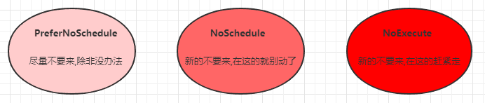
使用kubectl设置和去除污点的命令示例如下：
1 2 3 4 5 6 7 8 kubectl taint nodes node1 key=value:effect kubectl taint nodes node1 key:effect- kubectl taint nodes node1 key-
接下来，演示下污点的效果：
准备节点node1（为了演示效果更加明显，暂时停止node2节点）
为node1节点设置一个污点: tag=heima:PreferNoSchedule；然后创建pod1( pod1 可以 )
修改为node1节点设置一个污点: tag=heima:NoSchedule；然后创建pod2( pod1 正常 pod2 失败 )
修改为node1节点设置一个污点: tag=heima:NoExecute；然后创建pod3 ( 3个pod都失败 )
1 2 3 4 5 6 7 8 9 10 11 12 13 14 15 16 17 18 19 20 21 22 23 24 25 26 27 28 29 30 31 [root @master ~] [root @master ~] [root @master ~] NAME READY STATUS RESTARTS AGE IP NODE taint1-7665f7fd85-574h4 1 /1 Running 0 2 m24s 10.244 .1.59 node1 [root @master ~] [root @master ~] [root @master ~] [root @master ~] NAME READY STATUS RESTARTS AGE IP NODE taint1-7665f7fd85-574h4 1 /1 Running 0 2 m24s 10.244 .1.59 node1 taint2-544694789-6zmlf 0 /1 Pending 0 21 s <none> <none> [root @master ~] [root @master ~] [root @master ~] [root @master ~] NAME READY STATUS RESTARTS AGE IP NODE NOMINATED taint1-7665f7fd85-htkmp 0 /1 Pending 0 35 s <none> <none> <none> taint2-544694789-bn7wb 0 /1 Pending 0 35 s <none> <none> <none> taint3-6d78dbd749-tktkq 0 /1 Pending 0 6 s <none> <none> <none>
1 2 小提示： 使用kubeadm搭建的集群，默认就会给master节点添加一个污点标记,所以pod就不会调度到master节点上.
容忍（Toleration）
上面介绍了污点的作用，我们可以在node上添加污点用于拒绝pod调度上来，但是如果就是想将一个pod调度到一个有污点的node上去，这时候应该怎么做呢？这就要使用到容忍 。
污点就是拒绝，容忍就是忽略，Node通过污点拒绝pod调度上去，Pod通过容忍忽略拒绝
下面先通过一个案例看下效果：
上一小节，已经在node1节点上打上了NoExecute的污点，此时pod是调度不上去的
本小节，可以通过给pod添加容忍，然后将其调度上去
创建pod-toleration.yaml,内容如下
1 2 3 4 5 6 7 8 9 10 11 12 13 14 apiVersion: v1 kind: Pod metadata: name: pod-toleration namespace: dev spec: containers: - name: nginx image: nginx:1.17.1 tolerations: - key: "tag" operator: "Equal" value: "heima" effect: "NoExecute"
1 2 3 4 5 6 7 8 9 [root @master ~] NAME READY STATUS RESTARTS AGE IP NODE NOMINATED pod-toleration 0 /1 Pending 0 3 s <none> <none> <none> [root @master ~] NAME READY STATUS RESTARTS AGE IP NODE NOMINATED pod-toleration 1 /1 Running 0 3 s 10.244 .1.62 node1 <none>
下面看一下容忍的详细配置:
1 2 3 4 5 6 7 8 [root @master ~] ...... FIELDS: key value operator effect tolerationSeconds
第六章 Pod控制器详解 本章节主要介绍各种Pod控制器的详细使用。
Pod控制器介绍 Pod是kubernetes的最小管理单元，在kubernetes中，按照pod的创建方式可以将其分为两类：
什么是Pod控制器
Pod控制器是管理pod的中间层，使用Pod控制器之后，只需要告诉Pod控制器，想要多少个什么样的Pod就可以了，它会创建出满足条件的Pod并确保每一个Pod资源处于用户期望的目标状态。如果Pod资源在运行中出现故障，它会基于指定策略重新编排Pod。
在kubernetes中，有很多类型的pod控制器，每种都有自己的适合的场景，常见的有下面这些：
ReplicationController：比较原始的pod控制器，已经被废弃，由ReplicaSet替代
ReplicaSet：保证副本数量一直维持在期望值，并支持pod数量扩缩容，镜像版本升级
Deployment：通过控制ReplicaSet来控制Pod，并支持滚动升级、回退版本
Horizontal Pod Autoscaler：可以根据集群负载自动水平调整Pod的数量，实现削峰填谷
DaemonSet：在集群中的指定Node上运行且仅运行一个副本，一般用于守护进程类的任务
Job：它创建出来的pod只要完成任务就立即退出，不需要重启或重建，用于执行一次性任务
Cronjob：它创建的Pod负责周期性任务控制，不需要持续后台运行
StatefulSet：管理有状态应用
ReplicaSet(RS) ReplicaSet的主要作用是保证一定数量的pod正常运行 ，它会持续监听这些Pod的运行状态，一旦Pod发生故障，就会重启或重建。同时它还支持对pod数量的扩缩容和镜像版本的升降级。
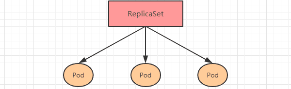
ReplicaSet的资源清单文件：
1 2 3 4 5 6 7 8 9 10 11 12 13 14 15 16 17 18 19 20 21 22 23 24 apiVersion: apps/v1 kind: ReplicaSet metadata: name: namespace: labels: controller: rs spec: replicas: 3 selector: matchLabels: app: nginx-pod matchExpressions: - {key: app , operator: In , values: [nginx-pod ]} template: metadata: labels: app: nginx-pod spec: containers: - name: nginx image: nginx:1.17.1 ports: - containerPort: 80
在这里面，需要新了解的配置项就是spec下面几个选项：
replicas：指定副本数量，其实就是当前rs创建出来的pod的数量，默认为1
selector：选择器，它的作用是建立pod控制器和pod之间的关联关系，采用的Label Selector机制
在pod模板上定义label，在控制器上定义选择器，就可以表明当前控制器能管理哪些pod了
template：模板，就是当前控制器创建pod所使用的模板板，里面其实就是前一章学过的pod的定义
创建ReplicaSet
创建pc-replicaset.yaml文件，内容如下：
1 2 3 4 5 6 7 8 9 10 11 12 13 14 15 16 17 18 apiVersion: apps/v1 kind: ReplicaSet metadata: name: pc-replicaset namespace: dev spec: replicas: 3 selector: matchLabels: app: nginx-pod template: metadata: labels: app: nginx-pod spec: containers: - name: nginx image: nginx:1.17.1
1 2 3 4 5 6 7 8 9 10 11 12 13 14 15 16 17 18 19 [root @master ~] replicaset.apps/pc-replicaset created [root @master ~] NAME DESIRED CURRENT READY AGE CONTAINERS IMAGES SELECTOR pc-replicaset 3 3 3 22 s nginx nginx:1.17 .1 app=nginx-pod [root @master ~] NAME READY STATUS RESTARTS AGE pc-replicaset-6vmvt 1 /1 Running 0 54 s pc-replicaset-fmb8f 1 /1 Running 0 54 s pc-replicaset-snrk2 1 /1 Running 0 54 s
扩缩容
1 2 3 4 5 6 7 8 9 10 11 12 13 14 15 16 17 18 19 20 21 22 23 24 25 26 27 28 29 30 31 32 33 34 [root @master ~] replicaset.apps/pc-replicaset edited [root @master ~] NAME READY STATUS RESTARTS AGE pc-replicaset-6vmvt 1 /1 Running 0 114 m pc-replicaset-cftnp 1 /1 Running 0 10 s pc-replicaset-fjlm6 1 /1 Running 0 10 s pc-replicaset-fmb8f 1 /1 Running 0 114 m pc-replicaset-s2whj 1 /1 Running 0 10 s pc-replicaset-snrk2 1 /1 Running 0 114 m [root @master ~] replicaset.apps/pc-replicaset scaled [root @master ~] NAME READY STATUS RESTARTS AGE pc-replicaset-6vmvt 0 /1 Terminating 0 118 m pc-replicaset-cftnp 0 /1 Terminating 0 4 m17s pc-replicaset-fjlm6 0 /1 Terminating 0 4 m17s pc-replicaset-fmb8f 1 /1 Running 0 118 m pc-replicaset-s2whj 0 /1 Terminating 0 4 m17s pc-replicaset-snrk2 1 /1 Running 0 118 m [root @master ~] NAME READY STATUS RESTARTS AGE pc-replicaset-fmb8f 1 /1 Running 0 119 m pc-replicaset-snrk2 1 /1 Running 0 119 m
镜像升级
1 2 3 4 5 6 7 8 9 10 11 12 13 14 15 16 17 18 [root @master ~] replicaset.apps/pc-replicaset edited [root @master ~] NAME DESIRED CURRENT READY AGE CONTAINERS IMAGES ... pc-replicaset 2 2 2 140 m nginx nginx:1.17 .2 ... [root @master ~] replicaset.apps/pc-replicaset image updated [root @master ~] NAME DESIRED CURRENT READY AGE CONTAINERS IMAGES ... pc-replicaset 2 2 2 145 m nginx nginx:1.17 .1 ...
删除ReplicaSet
1 2 3 4 5 6 7 8 9 10 11 12 13 14 15 16 17 18 [root @master ~] replicaset.apps "pc-replicaset" deleted [root @master ~] No resources found in dev namespace. [root @master ~] replicaset.apps "pc-replicaset" deleted [root @master ~] NAME READY STATUS RESTARTS AGE pc-replicaset-cl82j 1 /1 Running 0 75 s pc-replicaset-dslhb 1 /1 Running 0 75 s [root @master ~] replicaset.apps "pc-replicaset" deleted
Deployment(Deploy) 为了更好的解决服务编排的问题，kubernetes在V1.2版本开始，引入了Deployment控制器。值得一提的是，这种控制器并不直接管理pod，而是通过管理ReplicaSet来简介管理Pod，即：Deployment管理ReplicaSet，ReplicaSet管理Pod。所以Deployment比ReplicaSet功能更加强大。
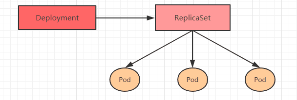
Deployment主要功能有下面几个：
支持ReplicaSet的所有功能
支持发布的停止、继续
支持滚动升级和回滚版本
Deployment的资源清单文件：
1 2 3 4 5 6 7 8 9 10 11 12 13 14 15 16 17 18 19 20 21 22 23 24 25 26 27 28 29 30 31 32 apiVersion: apps/v1 kind: Deployment metadata: name: namespace: labels: controller: deploy spec: replicas: 3 revisionHistoryLimit: 3 paused: false progressDeadlineSeconds: 600 strategy: type: RollingUpdate rollingUpdate: maxSurge: 30 % maxUnavailable: 30 % selector: matchLabels: app: nginx-pod matchExpressions: - {key: app , operator: In , values: [nginx-pod ]} template: metadata: labels: app: nginx-pod spec: containers: - name: nginx image: nginx:1.17.1 ports: - containerPort: 80
创建deployment
创建pc-deployment.yaml，内容如下：
1 2 3 4 5 6 7 8 9 10 11 12 13 14 15 16 17 18 apiVersion: apps/v1 kind: Deployment metadata: name: pc-deployment namespace: dev spec: replicas: 3 selector: matchLabels: app: nginx-pod template: metadata: labels: app: nginx-pod spec: containers: - name: nginx image: nginx:1.17.1
1 2 3 4 5 6 7 8 9 10 11 12 13 14 15 16 17 18 19 20 21 22 23 [root @master ~] deployment.apps/pc-deployment created [root @master ~] NAME READY UP-TO-DATE AVAILABLE AGE pc-deployment 3 /3 3 3 15 s [root @master ~] NAME DESIRED CURRENT READY AGE pc-deployment-6696798b78 3 3 3 23 s [root @master ~] NAME READY STATUS RESTARTS AGE pc-deployment-6696798b78-d2c8n 1 /1 Running 0 107 s pc-deployment-6696798b78-smpvp 1 /1 Running 0 107 s pc-deployment-6696798b78-wvjd8 1 /1 Running 0 107 s
扩缩容
1 2 3 4 5 6 7 8 9 10 11 12 13 14 15 16 17 18 19 20 21 22 23 24 25 26 27 28 29 [root @master ~] deployment.apps/pc-deployment scaled [root @master ~] NAME READY UP-TO-DATE AVAILABLE AGE pc-deployment 5 /5 5 5 2 m [root @master ~] NAME READY STATUS RESTARTS AGE pc-deployment-6696798b78-d2c8n 1 /1 Running 0 4 m19s pc-deployment-6696798b78-jxmdq 1 /1 Running 0 94 s pc-deployment-6696798b78-mktqv 1 /1 Running 0 93 s pc-deployment-6696798b78-smpvp 1 /1 Running 0 4 m19s pc-deployment-6696798b78-wvjd8 1 /1 Running 0 4 m19s [root @master ~] deployment.apps/pc-deployment edited [root @master ~] NAME READY STATUS RESTARTS AGE pc-deployment-6696798b78-d2c8n 1 /1 Running 0 5 m23s pc-deployment-6696798b78-jxmdq 1 /1 Running 0 2 m38s pc-deployment-6696798b78-smpvp 1 /1 Running 0 5 m23s pc-deployment-6696798b78-wvjd8 1 /1 Running 0 5 m23s
镜像更新
deployment支持两种更新策略:重建更新和滚动更新,可以通过strategy指定策略类型,支持两个属性:
1 2 3 4 5 6 7 strategy：指定新的Pod替换旧的Pod的策略， 支持两个属性： type：指定策略类型，支持两种策略 Recreate：在创建出新的Pod之前会先杀掉所有已存在的Pod RollingUpdate：滚动更新，就是杀死一部分，就启动一部分，在更新过程中，存在两个版本Pod rollingUpdate：当type为RollingUpdate时生效，用于为RollingUpdate设置参数，支持两个属性： maxUnavailable：用来指定在升级过程中不可用Pod的最大数量，默认为25%。 maxSurge： 用来指定在升级过程中可以超过期望的Pod的最大数量，默认为25%。
重建更新
1) 编辑pc-deployment.yaml,在spec节点下添加更新策略
1 2 3 spec: strategy: type: Recreate
2) 创建deploy进行验证
1 2 3 4 5 6 7 8 9 10 11 12 13 14 15 16 17 18 19 20 21 22 23 24 25 26 [root @master ~] deployment.apps/pc-deployment image updated [root @master ~] NAME READY STATUS RESTARTS AGE pc-deployment-5d89bdfbf9-65qcw 1 /1 Running 0 31 s pc-deployment-5d89bdfbf9-w5nzv 1 /1 Running 0 31 s pc-deployment-5d89bdfbf9-xpt7w 1 /1 Running 0 31 s pc-deployment-5d89bdfbf9-xpt7w 1 /1 Terminating 0 41 s pc-deployment-5d89bdfbf9-65qcw 1 /1 Terminating 0 41 s pc-deployment-5d89bdfbf9-w5nzv 1 /1 Terminating 0 41 s pc-deployment-675d469f8b-grn8z 0 /1 Pending 0 0 s pc-deployment-675d469f8b-hbl4v 0 /1 Pending 0 0 s pc-deployment-675d469f8b-67nz2 0 /1 Pending 0 0 s pc-deployment-675d469f8b-grn8z 0 /1 ContainerCreating 0 0 s pc-deployment-675d469f8b-hbl4v 0 /1 ContainerCreating 0 0 s pc-deployment-675d469f8b-67nz2 0 /1 ContainerCreating 0 0 s pc-deployment-675d469f8b-grn8z 1 /1 Running 0 1 s pc-deployment-675d469f8b-67nz2 1 /1 Running 0 1 s pc-deployment-675d469f8b-hbl4v 1 /1 Running 0 2 s
滚动更新
1) 编辑pc-deployment.yaml,在spec节点下添加更新策略
1 2 3 4 5 6 spec: strategy: type: RollingUpdate rollingUpdate: maxSurge: 25 % maxUnavailable: 25 %
2) 创建deploy进行验证
1 2 3 4 5 6 7 8 9 10 11 12 13 14 15 16 17 18 19 20 21 22 23 24 25 26 27 28 29 30 31 32 33 34 [root @master ~] deployment.apps/pc-deployment image updated [root @master ~] NAME READY STATUS RESTARTS AGE pc-deployment-c848d767-8rbzt 1 /1 Running 0 31 m pc-deployment-c848d767-h4p68 1 /1 Running 0 31 m pc-deployment-c848d767-hlmz4 1 /1 Running 0 31 m pc-deployment-c848d767-rrqcn 1 /1 Running 0 31 m pc-deployment-966bf7f44-226rx 0 /1 Pending 0 0 s pc-deployment-966bf7f44-226rx 0 /1 ContainerCreating 0 0 s pc-deployment-966bf7f44-226rx 1 /1 Running 0 1 s pc-deployment-c848d767-h4p68 0 /1 Terminating 0 34 m pc-deployment-966bf7f44-cnd44 0 /1 Pending 0 0 s pc-deployment-966bf7f44-cnd44 0 /1 ContainerCreating 0 0 s pc-deployment-966bf7f44-cnd44 1 /1 Running 0 2 s pc-deployment-c848d767-hlmz4 0 /1 Terminating 0 34 m pc-deployment-966bf7f44-px48p 0 /1 Pending 0 0 s pc-deployment-966bf7f44-px48p 0 /1 ContainerCreating 0 0 s pc-deployment-966bf7f44-px48p 1 /1 Running 0 0 s pc-deployment-c848d767-8rbzt 0 /1 Terminating 0 34 m pc-deployment-966bf7f44-dkmqp 0 /1 Pending 0 0 s pc-deployment-966bf7f44-dkmqp 0 /1 ContainerCreating 0 0 s pc-deployment-966bf7f44-dkmqp 1 /1 Running 0 2 s pc-deployment-c848d767-rrqcn 0 /1 Terminating 0 34 m
滚动更新的过程：
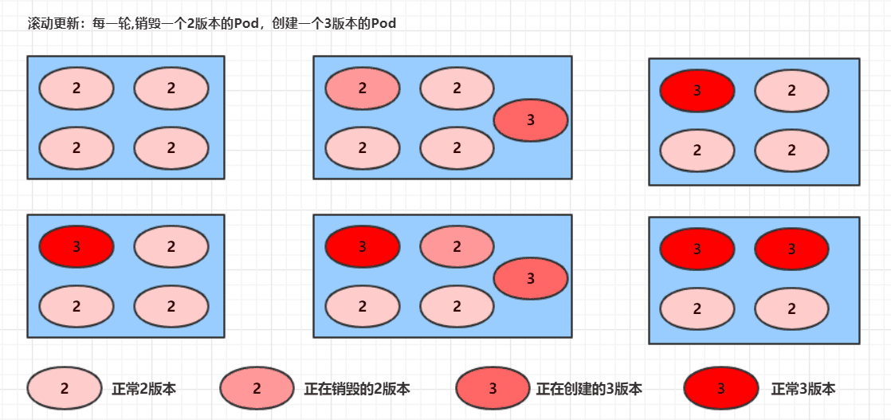
镜像更新中rs的变化:
1 2 3 4 5 6 7 [root @master ~] NAME DESIRED CURRENT READY AGE pc-deployment-6696798b78 0 0 0 7 m37s pc-deployment-6696798b11 0 0 0 5 m37s pc-deployment-c848d76789 4 4 4 72 s
版本回退
deployment支持版本升级过程中的暂停、继续功能以及版本回退等诸多功能，下面具体来看.
kubectl rollout： 版本升级相关功能，支持下面的选项：
status 显示当前升级状态
history 显示 升级历史记录
pause 暂停版本升级过程
resume 继续已经暂停的版本升级过程
restart 重启版本升级过程
undo 回滚到上一级版本（可以使用—to-revision回滚到指定版本）
1 2 3 4 5 6 7 8 9 10 11 12 13 14 15 16 17 18 19 20 21 22 23 24 25 26 27 28 29 30 31 [root @master ~] deployment "pc-deployment" successfully rolled out [root @master ~] deployment.apps/pc-deployment REVISION CHANGE-CAUSE 1 kubectl create --filename =pc-deployment .yaml --record =true2 kubectl create --filename =pc-deployment .yaml --record =true3 kubectl create --filename =pc-deployment .yaml --record =true[root @master ~] deployment.apps/pc-deployment rolled back [root @master ~] NAME READY UP-TO-DATE AVAILABLE AGE CONTAINERS IMAGES pc-deployment 4 /4 4 4 74 m nginx nginx:1.17 .1 [root @master ~] NAME DESIRED CURRENT READY AGE pc-deployment-6696798b78 4 4 4 78 m pc-deployment-966bf7f44 0 0 0 37 m pc-deployment-c848d767 0 0 0 71 m
金丝雀发布
Deployment控制器支持控制更新过程中的控制，如“暂停(pause)”或“继续(resume)”更新操作。
比如有一批新的Pod资源创建完成后立即暂停更新过程，此时，仅存在一部分新版本的应用，主体部分还是旧的版本。然后，再筛选一小部分的用户请求路由到新版本的Pod应用，继续观察能否稳定地按期望的方式运行。确定没问题之后再继续完成余下的Pod资源滚动更新，否则立即回滚更新操作。这就是所谓的金丝雀发布。
1 2 3 4 5 6 7 8 9 10 11 12 13 14 15 16 17 18 19 20 21 22 23 24 25 26 27 28 29 30 31 32 33 34 35 36 37 38 39 40 41 [root @master ~] deployment.apps/pc-deployment image updated deployment.apps/pc-deployment paused [root @master ~] Waiting for deployment "pc-deployment" rollout to finish: 2 out of 4 new replicas have been updated... [root @master ~] NAME DESIRED CURRENT READY AGE CONTAINERS IMAGES pc-deployment-5d89bdfbf9 3 3 3 19 m nginx nginx:1.17 .1 pc-deployment-675d469f8b 0 0 0 14 m nginx nginx:1.17 .2 pc-deployment-6c9f56fcfb 2 2 2 3 m16s nginx nginx:1.17 .4 [root @master ~] NAME READY STATUS RESTARTS AGE pc-deployment-5d89bdfbf9-rj8sq 1 /1 Running 0 7 m33s pc-deployment-5d89bdfbf9-ttwgg 1 /1 Running 0 7 m35s pc-deployment-5d89bdfbf9-v4wvc 1 /1 Running 0 7 m34s pc-deployment-6c9f56fcfb-996rt 1 /1 Running 0 3 m31s pc-deployment-6c9f56fcfb-j2gtj 1 /1 Running 0 3 m31s [root @master ~] deployment.apps/pc-deployment resumed [root @master ~] NAME DESIRED CURRENT READY AGE CONTAINERS IMAGES pc-deployment-5d89bdfbf9 0 0 0 21 m nginx nginx:1.17 .1 pc-deployment-675d469f8b 0 0 0 16 m nginx nginx:1.17 .2 pc-deployment-6c9f56fcfb 4 4 4 5 m11s nginx nginx:1.17 .4 [root @master ~] NAME READY STATUS RESTARTS AGE pc-deployment-6c9f56fcfb-7bfwh 1 /1 Running 0 37 s pc-deployment-6c9f56fcfb-996rt 1 /1 Running 0 5 m27s pc-deployment-6c9f56fcfb-j2gtj 1 /1 Running 0 5 m27s pc-deployment-6c9f56fcfb-rf84v 1 /1 Running 0 37 s
删除Deployment
1 2 3 [root @master ~] deployment.apps "pc-deployment" deleted
Horizontal Pod Autoscaler(HPA) 在前面的课程中，我们已经可以实现通过手工执行kubectl scale命令实现Pod扩容或缩容，但是这显然不符合Kubernetes的定位目标—自动化、智能化。 Kubernetes期望可以实现通过监测Pod的使用情况，实现pod数量的自动调整，于是就产生了Horizontal Pod Autoscaler（HPA）这种控制器。
HPA可以获取每个Pod利用率，然后和HPA中定义的指标进行对比，同时计算出需要伸缩的具体值，最后实现Pod的数量的调整。其实HPA与之前的Deployment一样，也属于一种Kubernetes资源对象，它通过追踪分析RC控制的所有目标Pod的负载变化情况，来确定是否需要针对性地调整目标Pod的副本数，这是HPA的实现原理。
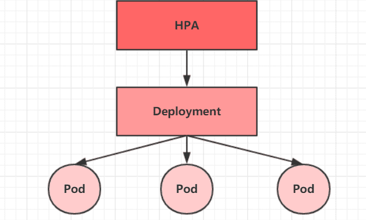
接下来，我们来做一个实验
1 安装metrics-server
metrics-server可以用来收集集群中的资源使用情况
1 2 3 4 5 6 7 8 9 10 11 12 13 [root @master ~] [root @master ~] [root @master ~] [root @master 1.8 +] 按图中添加下面选项 hostNetwork: true image: registry.cn-hangzhou .aliyuncs.com/google_containers/metrics-server-amd64 :v0.3.6 args: - --kubelet-insecure-tls - --kubelet-preferred-address-types =InternalIP,Hostname,InternalDNS,ExternalDNS,ExternalIP
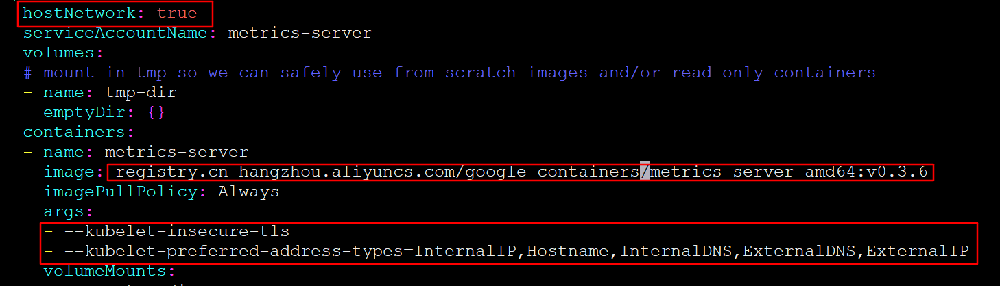
1 2 3 4 5 6 7 8 9 10 11 12 13 14 15 16 17 18 19 20 [root @master 1.8 +] [root @master 1.8 +] metrics-server-6b976979db-2xwbj 1 /1 Running 0 90 s [root @master 1.8 +] NAME CPU(cores) CPU% MEMORY(bytes) MEMORY% master 98 m 4 % 1067 Mi 62 % node1 27 m 1 % 727 Mi 42 % node2 34 m 1 % 800 Mi 46 % [root @master 1.8 +] NAME CPU(cores) MEMORY(bytes) coredns-6955765f44-7ptsb 3 m 9 Mi coredns-6955765f44-vcwr5 3 m 8 Mi etcd-master 14 m 145 Mi ...
2 准备deployment和servie
为了操作简单,直接使用命令
1 2 3 4 5 6 7 8 9 10 11 12 13 14 15 [root @master 1.8 +] [root @master 1.8 +] [root @master 1.8 +] NAME READY UP-TO-DATE AVAILABLE AGE deployment.apps/nginx 1 /1 1 1 47 s NAME READY STATUS RESTARTS AGE pod/nginx-7df9756ccc-bh8dr 1 /1 Running 0 47 s NAME TYPE CLUSTER-IP EXTERNAL-IP PORT(S) AGE service/nginx NodePort 10.109 .57.248 <none> 80 :31136 /TCP 35 s
3 部署HPA
创建pc-hpa.yaml
1 2 3 4 5 6 7 8 9 10 11 12 13 apiVersion: autoscaling/v1 kind: HorizontalPodAutoscaler metadata: name: pc-hpa namespace: dev spec: minReplicas: 1 maxReplicas: 10 targetCPUUtilizationPercentage: 3 scaleTargetRef: apiVersion: apps/v1 kind: Deployment name: nginx
1 2 3 4 5 6 7 8 [root @master 1.8 +] horizontalpodautoscaler.autoscaling/pc-hpa created [root @master 1.8 +] NAME REFERENCE TARGETS MINPODS MAXPODS REPLICAS AGE pc-hpa Deployment/nginx 0 %/3 % 1 10 1 62 s
4 测试
使用压测工具对service地址192.168.109.100:31136进行压测，然后通过控制台查看hpa和pod的变化
hpa变化
1 2 3 4 5 6 7 8 9 10 11 [root @master ~] NAME REFERENCE TARGETS MINPODS MAXPODS REPLICAS AGE pc-hpa Deployment/nginx 0 %/3 % 1 10 1 4 m11s pc-hpa Deployment/nginx 0 %/3 % 1 10 1 5 m19s pc-hpa Deployment/nginx 22 %/3 % 1 10 1 6 m50s pc-hpa Deployment/nginx 22 %/3 % 1 10 4 7 m5s pc-hpa Deployment/nginx 22 %/3 % 1 10 8 7 m21s pc-hpa Deployment/nginx 6 %/3 % 1 10 8 7 m51s pc-hpa Deployment/nginx 0 %/3 % 1 10 8 9 m6s pc-hpa Deployment/nginx 0 %/3 % 1 10 8 13 m pc-hpa Deployment/nginx 0 %/3 % 1 10 1 14 m
deployment变化
1 2 3 4 5 6 7 8 9 10 11 12 13 14 15 16 17 18 19 20 21 [root @master ~] NAME READY UP-TO-DATE AVAILABLE AGE nginx 1 /1 1 1 11 m nginx 1 /4 1 1 13 m nginx 1 /4 1 1 13 m nginx 1 /4 1 1 13 m nginx 1 /4 4 1 13 m nginx 1 /8 4 1 14 m nginx 1 /8 4 1 14 m nginx 1 /8 4 1 14 m nginx 1 /8 8 1 14 m nginx 2 /8 8 2 14 m nginx 3 /8 8 3 14 m nginx 4 /8 8 4 14 m nginx 5 /8 8 5 14 m nginx 6 /8 8 6 14 m nginx 7 /8 8 7 14 m nginx 8 /8 8 8 15 m nginx 8 /1 8 8 20 m nginx 8 /1 8 8 20 m nginx 1 /1 1 1 20 m
pod变化
1 2 3 4 5 6 7 8 9 10 11 12 13 14 15 16 17 18 19 20 21 22 23 24 25 26 27 28 29 30 31 [root @master ~] NAME READY STATUS RESTARTS AGE nginx-7df9756ccc-bh8dr 1 /1 Running 0 11 m nginx-7df9756ccc-cpgrv 0 /1 Pending 0 0 s nginx-7df9756ccc-8zhwk 0 /1 Pending 0 0 s nginx-7df9756ccc-rr9bn 0 /1 Pending 0 0 s nginx-7df9756ccc-cpgrv 0 /1 ContainerCreating 0 0 s nginx-7df9756ccc-8zhwk 0 /1 ContainerCreating 0 0 s nginx-7df9756ccc-rr9bn 0 /1 ContainerCreating 0 0 s nginx-7df9756ccc-m9gsj 0 /1 Pending 0 0 s nginx-7df9756ccc-g56qb 0 /1 Pending 0 0 s nginx-7df9756ccc-sl9c6 0 /1 Pending 0 0 s nginx-7df9756ccc-fgst7 0 /1 Pending 0 0 s nginx-7df9756ccc-g56qb 0 /1 ContainerCreating 0 0 s nginx-7df9756ccc-m9gsj 0 /1 ContainerCreating 0 0 s nginx-7df9756ccc-sl9c6 0 /1 ContainerCreating 0 0 s nginx-7df9756ccc-fgst7 0 /1 ContainerCreating 0 0 s nginx-7df9756ccc-8zhwk 1 /1 Running 0 19 s nginx-7df9756ccc-rr9bn 1 /1 Running 0 30 s nginx-7df9756ccc-m9gsj 1 /1 Running 0 21 s nginx-7df9756ccc-cpgrv 1 /1 Running 0 47 s nginx-7df9756ccc-sl9c6 1 /1 Running 0 33 s nginx-7df9756ccc-g56qb 1 /1 Running 0 48 s nginx-7df9756ccc-fgst7 1 /1 Running 0 66 s nginx-7df9756ccc-fgst7 1 /1 Terminating 0 6 m50s nginx-7df9756ccc-8zhwk 1 /1 Terminating 0 7 m5s nginx-7df9756ccc-cpgrv 1 /1 Terminating 0 7 m5s nginx-7df9756ccc-g56qb 1 /1 Terminating 0 6 m50s nginx-7df9756ccc-rr9bn 1 /1 Terminating 0 7 m5s nginx-7df9756ccc-m9gsj 1 /1 Terminating 0 6 m50s nginx-7df9756ccc-sl9c6 1 /1 Terminating 0 6 m50s
DaemonSet(DS) DaemonSet类型的控制器可以保证在集群中的每一台（或指定）节点上都运行一个副本。一般适用于日志收集、节点监控等场景。也就是说，如果一个Pod提供的功能是节点级别的（每个节点都需要且只需要一个），那么这类Pod就适合使用DaemonSet类型的控制器创建。
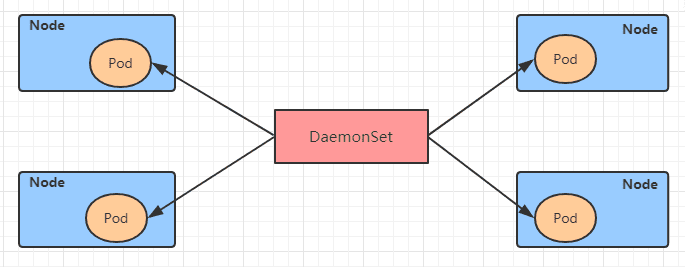
DaemonSet控制器的特点：
每当向集群中添加一个节点时，指定的 Pod 副本也将添加到该节点上
当节点从集群中移除时，Pod 也就被垃圾回收了
下面先来看下DaemonSet的资源清单文件
1 2 3 4 5 6 7 8 9 10 11 12 13 14 15 16 17 18 19 20 21 22 23 24 25 26 27 28 apiVersion: apps/v1 kind: DaemonSet metadata: name: namespace: labels: controller: daemonset spec: revisionHistoryLimit: 3 updateStrategy: type: RollingUpdate rollingUpdate: maxUnavailable: 1 selector: matchLabels: app: nginx-pod matchExpressions: - {key: app , operator: In , values: [nginx-pod ]} template: metadata: labels: app: nginx-pod spec: containers: - name: nginx image: nginx:1.17.1 ports: - containerPort: 80
创建pc-daemonset.yaml，内容如下：
1 2 3 4 5 6 7 8 9 10 11 12 13 14 15 16 17 apiVersion: apps/v1 kind: DaemonSet metadata: name: pc-daemonset namespace: dev spec: selector: matchLabels: app: nginx-pod template: metadata: labels: app: nginx-pod spec: containers: - name: nginx image: nginx:1.17.1
1 2 3 4 5 6 7 8 9 10 11 12 13 14 15 16 17 18 [root @master ~] daemonset.apps/pc-daemonset created [root @master ~] NAME DESIRED CURRENT READY UP-TO-DATE AVAILABLE AGE CONTAINERS IMAGES pc-daemonset 2 2 2 2 2 24 s nginx nginx:1.17 .1 [root @master ~] NAME READY STATUS RESTARTS AGE IP NODE pc-daemonset-9bck8 1 /1 Running 0 37 s 10.244 .1.43 node1 pc-daemonset-k224w 1 /1 Running 0 37 s 10.244 .2.74 node2 [root @master ~] daemonset.apps "pc-daemonset" deleted
Job Job，主要用于负责批量处理(一次要处理指定数量任务) 短暂的一次性(每个任务仅运行一次就结束) 任务。Job特点如下：
当Job创建的pod执行成功结束时，Job将记录成功结束的pod数量
当成功结束的pod达到指定的数量时，Job将完成执行
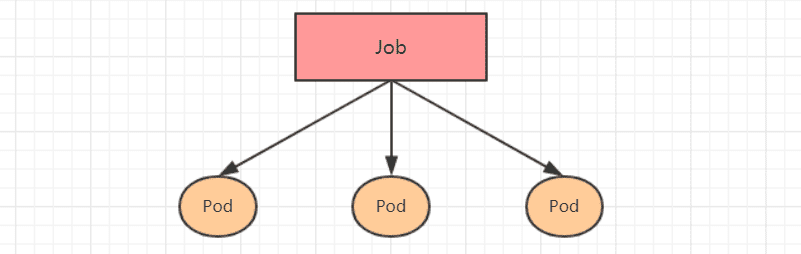
Job的资源清单文件：
1 2 3 4 5 6 7 8 9 10 11 12 13 14 15 16 17 18 19 20 21 22 23 24 25 26 27 28 apiVersion: batch/v1 kind: Job metadata: name: namespace: labels: controller: job spec: completions: 1 parallelism: 1 activeDeadlineSeconds: 30 backoffLimit: 6 manualSelector: true selector: matchLabels: app: counter-pod matchExpressions: - {key: app , operator: In , values: [counter-pod ]} template: metadata: labels: app: counter-pod spec: restartPolicy: Never containers: - name: counter image: busybox:1.30 command: ["bin/sh" ,"-c" ,"for i in 9 8 7 6 5 4 3 2 1; do echo $i;sleep 2;done" ]
1 2 3 4 关于重启策略设置的说明： 如果指定为OnFailure，则job会在pod出现故障时重启容器，而不是创建pod，failed次数不变 如果指定为Never，则job会在pod出现故障时创建新的pod，并且故障pod不会消失，也不会重启，failed次数加1 如果指定为Always的话，就意味着一直重启，意味着job任务会重复去执行了，当然不对，所以不能设置为Always
创建pc-job.yaml，内容如下：
1 2 3 4 5 6 7 8 9 10 11 12 13 14 15 16 17 18 19 20 apiVersion: batch/v1 kind: Job metadata: name: pc-job namespace: dev spec: manualSelector: true selector: matchLabels: app: counter-pod template: metadata: labels: app: counter-pod spec: restartPolicy: Never containers: - name: counter image: busybox:1.30 command: ["bin/sh" ,"-c" ,"for i in 9 8 7 6 5 4 3 2 1; do echo $i;sleep 3;done" ]
1 2 3 4 5 6 7 8 9 10 11 12 13 14 15 16 17 18 19 20 21 22 23 24 25 26 27 28 29 30 31 32 33 34 35 36 37 38 39 40 41 42 43 44 45 46 47 [root @master ~] job.batch/pc-job created [root @master ~] NAME COMPLETIONS DURATION AGE CONTAINERS IMAGES SELECTOR pc-job 0 /1 21 s 21 s counter busybox:1.30 app=counter-pod pc-job 1 /1 31 s 79 s counter busybox:1.30 app=counter-pod [root @master ~] NAME READY STATUS RESTARTS AGE pc-job-rxg96 1 /1 Running 0 29 s pc-job-rxg96 0 /1 Completed 0 33 s [root @master ~] NAME READY STATUS RESTARTS AGE pc-job-684ft 1 /1 Running 0 5 s pc-job-jhj49 1 /1 Running 0 5 s pc-job-pfcvh 1 /1 Running 0 5 s pc-job-684ft 0 /1 Completed 0 11 s pc-job-v7rhr 0 /1 Pending 0 0 s pc-job-v7rhr 0 /1 Pending 0 0 s pc-job-v7rhr 0 /1 ContainerCreating 0 0 s pc-job-jhj49 0 /1 Completed 0 11 s pc-job-fhwf7 0 /1 Pending 0 0 s pc-job-fhwf7 0 /1 Pending 0 0 s pc-job-pfcvh 0 /1 Completed 0 11 s pc-job-5vg2j 0 /1 Pending 0 0 s pc-job-fhwf7 0 /1 ContainerCreating 0 0 s pc-job-5vg2j 0 /1 Pending 0 0 s pc-job-5vg2j 0 /1 ContainerCreating 0 0 s pc-job-fhwf7 1 /1 Running 0 2 s pc-job-v7rhr 1 /1 Running 0 2 s pc-job-5vg2j 1 /1 Running 0 3 s pc-job-fhwf7 0 /1 Completed 0 12 s pc-job-v7rhr 0 /1 Completed 0 12 s pc-job-5vg2j 0 /1 Completed 0 12 s [root @master ~] job.batch "pc-job" deleted
CronJob(CJ) CronJob控制器以Job控制器资源为其管控对象，并借助它管理pod资源对象，Job控制器定义的作业任务在其控制器资源创建之后便会立即执行，但CronJob可以以类似于Linux操作系统的周期性任务作业计划的方式控制其运行时间点 及重复运行 的方式。也就是说，CronJob可以在特定的时间点(反复的)去运行job任务 。
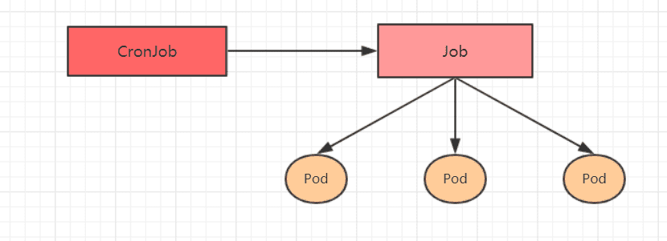
CronJob的资源清单文件：
1 2 3 4 5 6 7 8 9 10 11 12 13 14 15 16 17 18 19 20 21 22 23 24 25 26 27 28 29 30 31 32 33 34 35 36 apiVersion: batch/v1beta1 kind: CronJob metadata: name: namespace: labels: controller: cronjob spec: schedule: concurrencyPolicy: failedJobHistoryLimit: successfulJobHistoryLimit: startingDeadlineSeconds: jobTemplate: metadata: spec: completions: 1 parallelism: 1 activeDeadlineSeconds: 30 backoffLimit: 6 manualSelector: true selector: matchLabels: app: counter-pod matchExpressions: 规则 - {key: app , operator: In , values: [counter-pod ]} template: metadata: labels: app: counter-pod spec: restartPolicy: Never containers: - name: counter image: busybox:1.30 command: ["bin/sh" ,"-c" ,"for i in 9 8 7 6 5 4 3 2 1; do echo $i;sleep 20;done" ]
1 2 3 4 5 6 7 8 9 10 11 12 13 14 15 需要重点解释的几个选项： schedule: cron表达式，用于指定任务的执行时间 */1 * * * * <分钟> <小时> <日> <月份> <星期> 分钟 值从 0 到 59. 小时 值从 0 到 23. 日 值从 1 到 31. 月 值从 1 到 12. 星期 值从 0 到 6, 0 代表星期日 多个时间可以用逗号隔开； 范围可以用连字符给出；*可以作为通配符； /表示每... concurrencyPolicy: Allow: 允许Jobs并发运行(默认) Forbid: 禁止并发运行，如果上一次运行尚未完成，则跳过下一次运行 Replace: 替换，取消当前正在运行的作业并用新作业替换它
创建pc-cronjob.yaml，内容如下：
1 2 3 4 5 6 7 8 9 10 11 12 13 14 15 16 17 18 19 apiVersion: batch/v1beta1 kind: CronJob metadata: name: pc-cronjob namespace: dev labels: controller: cronjob spec: schedule: "*/1 * * * *" jobTemplate: metadata: spec: template: spec: restartPolicy: Never containers: - name: counter image: busybox:1.30 command: ["bin/sh" ,"-c" ,"for i in 9 8 7 6 5 4 3 2 1; do echo $i;sleep 3;done" ]
1 2 3 4 5 6 7 8 9 10 11 12 13 14 15 16 17 18 19 20 21 22 23 24 25 26 [root @master ~] cronjob.batch/pc-cronjob created [root @master ~] NAME SCHEDULE SUSPEND ACTIVE LAST SCHEDULE AGE pc-cronjob */1 * * * * False 0 <none> 6 s [root @master ~] NAME COMPLETIONS DURATION AGE pc-cronjob-1592587800 1 /1 28 s 3 m26s pc-cronjob-1592587860 1 /1 28 s 2 m26s pc-cronjob-1592587920 1 /1 28 s 86 s [root @master ~] pc-cronjob-1592587800-x4tsm 0 /1 Completed 0 2 m24s pc-cronjob-1592587860-r5gv4 0 /1 Completed 0 84 s pc-cronjob-1592587920-9dxxq 1 /1 Running 0 24 s [root @master ~] cronjob.batch "pc-cronjob" deleted
第七章 Service详解 本章节主要介绍kubernetes的流量负载组件：Service和Ingress。
Service介绍 在kubernetes中，pod是应用程序的载体，我们可以通过pod的ip来访问应用程序，但是pod的ip地址不是固定的，这也就意味着不方便直接采用pod的ip对服务进行访问。
为了解决这个问题，kubernetes提供了Service资源，Service会对提供同一个服务的多个pod进行聚合，并且提供一个统一的入口地址。通过访问Service的入口地址就能访问到后面的pod服务。
Service在很多情况下只是一个概念，真正起作用的其实是kube-proxy服务进程，每个Node节点上都运行着一个kube-proxy服务进程。当创建Service的时候会通过api-server向etcd写入创建的service的信息，而kube-proxy会基于监听的机制发现这种Service的变动，然后它会将最新的Service信息转换成对应的访问规则 。
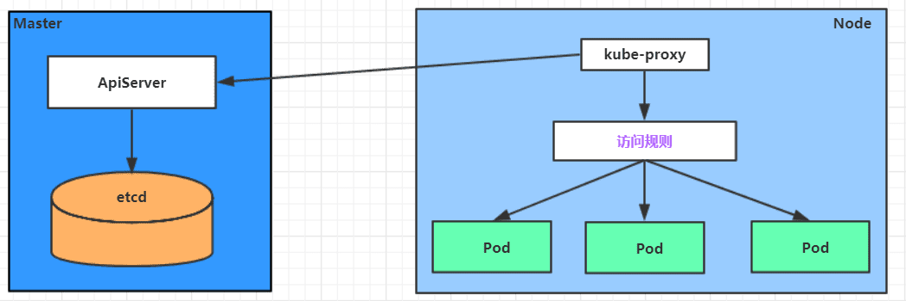
1 2 3 4 5 6 7 8 9 10 11 12 [root @node1 ~] IP Virtual Server version 1.2 .1 (size=4096 ) Prot LocalAddress:Port Scheduler Flags -> RemoteAddress:Port Forward Weight ActiveConn InActConn TCP 10.97 .97.97 :80 rr -> 10.244 .1.39 :80 Masq 1 0 0 -> 10.244 .1.40 :80 Masq 1 0 0 -> 10.244 .2.33 :80 Masq 1 0 0
kube-proxy目前支持三种工作模式:
userspace 模式
userspace模式下，kube-proxy会为每一个Service创建一个监听端口，发向Cluster IP的请求被Iptables规则重定向到kube-proxy监听的端口上，kube-proxy根据LB算法选择一个提供服务的Pod并和其建立链接，以将请求转发到Pod上。
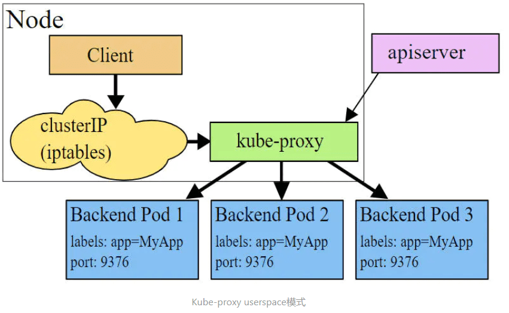
iptables 模式
iptables模式下，kube-proxy为service后端的每个Pod创建对应的iptables规则，直接将发向Cluster IP的请求重定向到一个Pod IP。
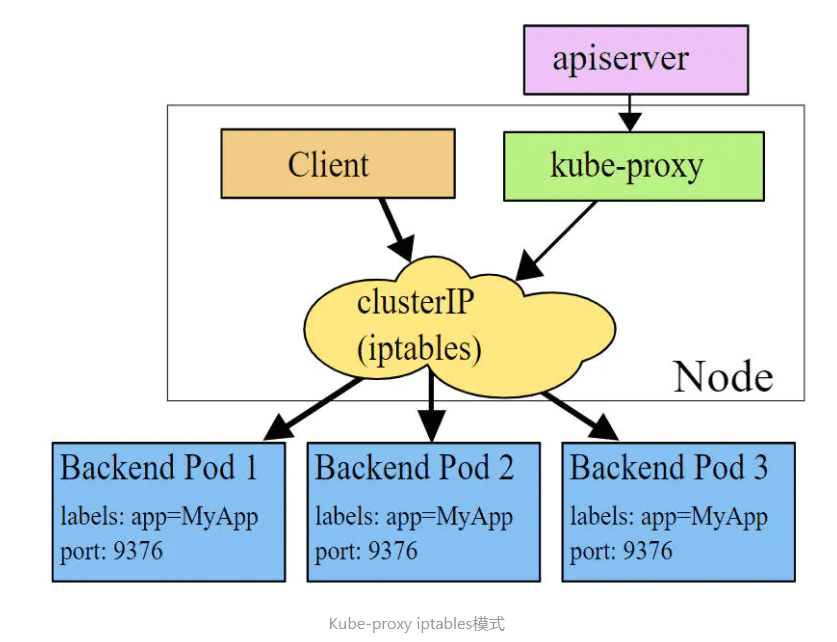
ipvs 模式
ipvs模式和iptables类似，kube-proxy监控Pod的变化并创建相应的ipvs规则。ipvs相对iptables转发效率更高。除此以外，ipvs支持更多的LB算法。
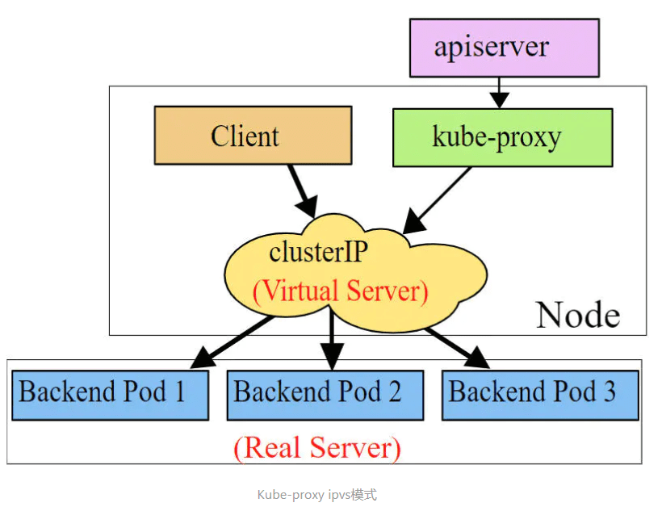
1 2 3 4 5 6 7 8 9 10 11 12 [root @master ~] [root @master ~] [root @node1 ~] IP Virtual Server version 1.2 .1 (size=4096 ) Prot LocalAddress:Port Scheduler Flags -> RemoteAddress:Port Forward Weight ActiveConn InActConn TCP 10.97 .97.97 :80 rr -> 10.244 .1.39 :80 Masq 1 0 0 -> 10.244 .1.40 :80 Masq 1 0 0 -> 10.244 .2.33 :80 Masq 1 0 0
Service类型 Service的资源清单文件：
1 2 3 4 5 6 7 8 9 10 11 12 13 14 15 16 kind: Service apiVersion: v1 metadata: name: service namespace: dev spec: selector: app: nginx type: clusterIP: sessionAffinity: ports: - protocol: TCP port: 3017 targetPort: 5003 nodePort: 31122
ClusterIP：默认值，它是Kubernetes系统自动分配的虚拟IP，只能在集群内部访问
NodePort：将Service通过指定的Node上的端口暴露给外部，通过此方法，就可以在集群外部访问服务
LoadBalancer：使用外接负载均衡器完成到服务的负载分发，注意此模式需要外部云环境支持
ExternalName： 把集群外部的服务引入集群内部，直接使用
Service使用 实验环境准备 在使用service之前，首先利用Deployment创建出3个pod，注意要为pod设置app=nginx-pod的标签
创建deployment.yaml，内容如下：
1 2 3 4 5 6 7 8 9 10 11 12 13 14 15 16 17 18 19 20 apiVersion: apps/v1 kind: Deployment metadata: name: pc-deployment namespace: dev spec: replicas: 3 selector: matchLabels: app: nginx-pod template: metadata: labels: app: nginx-pod spec: containers: - name: nginx image: nginx:1.17.1 ports: - containerPort: 80
1 2 3 4 5 6 7 8 9 10 11 12 13 14 15 16 17 18 19 20 21 [root @master ~] deployment.apps/pc-deployment created [root @master ~] NAME READY STATUS IP NODE LABELS pc-deployment-66cb59b984-8p84h 1 /1 Running 10.244 .1.40 node1 app=nginx-pod pc-deployment-66cb59b984-vx8vx 1 /1 Running 10.244 .2.33 node2 app=nginx-pod pc-deployment-66cb59b984-wnncx 1 /1 Running 10.244 .1.39 node1 app=nginx-pod [root @master ~] 10.244 .1.40 [root @master ~] 10.244 .2.33 [root @master ~] 10.244 .1.39
ClusterIP类型的Service 创建service-clusterip.yaml文件
1 2 3 4 5 6 7 8 9 10 11 12 13 apiVersion: v1 kind: Service metadata: name: service-clusterip namespace: dev spec: selector: app: nginx-pod clusterIP: 10.97 .97 .97 type: ClusterIP ports: - port: 80 targetPort: 80
1 2 3 4 5 6 7 8 9 10 11 12 13 14 15 16 17 18 19 20 21 22 23 24 25 26 27 28 29 30 31 32 33 34 35 [root @master ~] service/service-clusterip created [root @master ~] NAME TYPE CLUSTER-IP EXTERNAL-IP PORT(S) AGE SELECTOR service-clusterip ClusterIP 10.97 .97.97 <none> 80 /TCP 13 s app=nginx-pod [root @master ~] Name: service-clusterip Namespace: dev Labels: <none> Annotations: <none> Selector: app=nginx-pod Type : ClusterIPIP: 10.97 .97.97 Port: <unset> 80 /TCP TargetPort: 80 /TCP Endpoints: 10.244 .1.39 :80 ,10.244 .1.40 :80 ,10.244 .2.33 :80 Session Affinity: None Events: <none> [root @master ~] TCP 10.97 .97.97 :80 rr -> 10.244 .1.39 :80 Masq 1 0 0 -> 10.244 .1.40 :80 Masq 1 0 0 -> 10.244 .2.33 :80 Masq 1 0 0 [root @master ~] 10.244 .2.33
Endpoint
Endpoint是kubernetes中的一个资源对象，存储在etcd中，用来记录一个service对应的所有pod的访问地址，它是根据service配置文件中selector描述产生的。
一个Service由一组Pod组成，这些Pod通过Endpoints暴露出来，Endpoints是实现实际服务的端点集合 。换句话说，service和pod之间的联系是通过endpoints实现的。
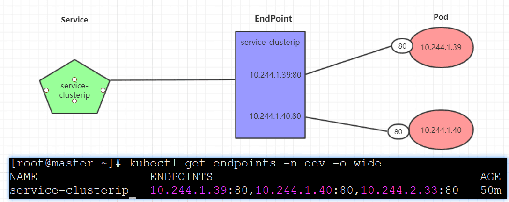
负载分发策略
对Service的访问被分发到了后端的Pod上去，目前kubernetes提供了两种负载分发策略：
如果不定义，默认使用kube-proxy的策略，比如随机、轮询
基于客户端地址的会话保持模式，即来自同一个客户端发起的所有请求都会转发到固定的一个Pod上
此模式可以使在spec中添加sessionAffinity:ClientIP选项
1 2 3 4 5 6 7 8 9 10 11 12 13 14 15 16 17 18 19 20 21 22 23 24 25 26 27 28 29 30 31 32 33 34 [root @master ~] TCP 10.97 .97.97 :80 rr -> 10.244 .1.39 :80 Masq 1 0 0 -> 10.244 .1.40 :80 Masq 1 0 0 -> 10.244 .2.33 :80 Masq 1 0 0 [root @master ~] 10.244 .1.40 10.244 .1.39 10.244 .2.33 10.244 .1.40 10.244 .1.39 10.244 .2.33 [root @master ~] TCP 10.97 .97.97 :80 rr persistent 10800 -> 10.244 .1.39 :80 Masq 1 0 0 -> 10.244 .1.40 :80 Masq 1 0 0 -> 10.244 .2.33 :80 Masq 1 0 0 [root @master ~] 10.244 .2.33 10.244 .2.33 10.244 .2.33 [root @master ~] service "service-clusterip" deleted
HeadLiness类型的Service 在某些场景中，开发人员可能不想使用Service提供的负载均衡功能，而希望自己来控制负载均衡策略，针对这种情况，kubernetes提供了HeadLiness Service，这类Service不会分配Cluster IP，如果想要访问service，只能通过service的域名进行查询。
创建service-headliness.yaml
1 2 3 4 5 6 7 8 9 10 11 12 13 apiVersion: v1 kind: Service metadata: name: service-headliness namespace: dev spec: selector: app: nginx-pod clusterIP: None type: ClusterIP ports: - port: 80 targetPort: 80
1 2 3 4 5 6 7 8 9 10 11 12 13 14 15 16 17 18 19 20 21 22 23 24 25 26 27 28 29 30 31 32 33 34 [root @master ~] service/service-headliness created [root @master ~] NAME TYPE CLUSTER-IP EXTERNAL-IP PORT(S) AGE SELECTOR service-headliness ClusterIP None <none> 80 /TCP 11 s app=nginx-pod [root @master ~] Name: service-headliness Namespace: dev Labels: <none> Annotations: <none> Selector: app=nginx-pod Type : ClusterIPIP: None Port: <unset> 80 /TCP TargetPort: 80 /TCP Endpoints: 10.244 .1.39 :80 ,10.244 .1.40 :80 ,10.244 .2.33 :80 Session Affinity: None Events: <none> [root @master ~] / nameserver 10.96 .0.10 search dev.svc.cluster.local svc.cluster.local cluster.local [root @master ~] service-headliness .dev.svc.cluster.local. 30 IN A 10.244 .1.40 service-headliness .dev.svc.cluster.local. 30 IN A 10.244 .1.39 service-headliness .dev.svc.cluster.local. 30 IN A 10.244 .2.33
NodePort类型的Service 在之前的样例中，创建的Service的ip地址只有集群内部才可以访问，如果希望将Service暴露给集群外部使用，那么就要使用到另外一种类型的Service，称为NodePort类型。NodePort的工作原理其实就是将service的端口映射到Node的一个端口上 ，然后就可以通过NodeIp:NodePort来访问service了。
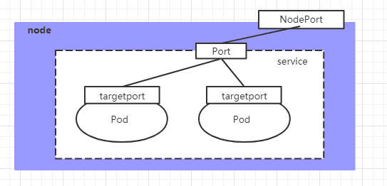
创建service-nodeport.yaml
1 2 3 4 5 6 7 8 9 10 11 12 13 apiVersion: v1 kind: Service metadata: name: service-nodeport namespace: dev spec: selector: app: nginx-pod type: NodePort ports: - port: 80 nodePort: 30002 targetPort: 80
1 2 3 4 5 6 7 8 9 10 [root @master ~] service/service-nodeport created [root @master ~] NAME TYPE CLUSTER-IP EXTERNAL-IP PORT(S) SELECTOR service-nodeport NodePort 10.105 .64.191 <none> 80 :30002 /TCP app=nginx-pod
LoadBalancer类型的Service LoadBalancer和NodePort很相似，目的都是向外部暴露一个端口，区别在于LoadBalancer会在集群的外部再来做一个负载均衡设备，而这个设备需要外部环境支持的，外部服务发送到这个设备上的请求，会被设备负载之后转发到集群中。
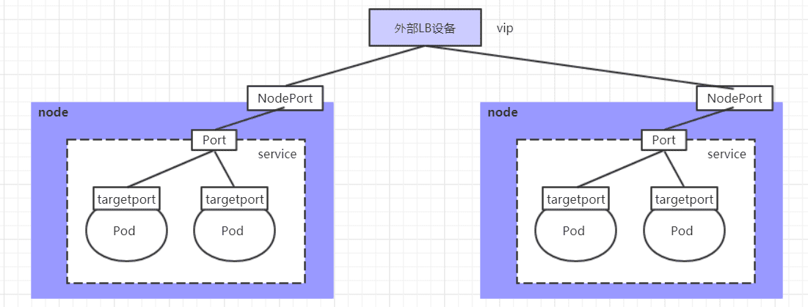
ExternalName类型的Service ExternalName类型的Service用于引入集群外部的服务，它通过externalName属性指定外部一个服务的地址，然后在集群内部访问此service就可以访问到外部的服务了。
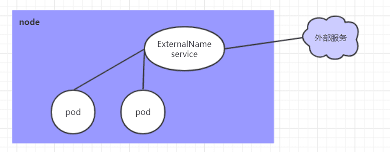
1 2 3 4 5 6 7 8 apiVersion: v1 kind: Service metadata: name: service-externalname namespace: dev spec: type: ExternalName externalName: www.baidu.com
1 2 3 4 5 6 7 8 9 10 [root @master ~] service/service-externalname created [root @master ~] service-externalname .dev.svc.cluster.local. 30 IN CNAME www.baidu.com. www.baidu.com. 30 IN CNAME www.a.shifen.com. www.a.shifen.com. 30 IN A 39.156 .66.18 www.a.shifen.com. 30 IN A 39.156 .66.14
Ingress介绍 在前面课程中已经提到，Service对集群之外暴露服务的主要方式有两种：NotePort和LoadBalancer，但是这两种方式，都有一定的缺点：
NodePort方式的缺点是会占用很多集群机器的端口，那么当集群服务变多的时候，这个缺点就愈发明显
LB方式的缺点是每个service需要一个LB，浪费、麻烦，并且需要kubernetes之外设备的支持
基于这种现状，kubernetes提供了Ingress资源对象，Ingress只需要一个NodePort或者一个LB就可以满足暴露多个Service的需求。工作机制大致如下图表示：
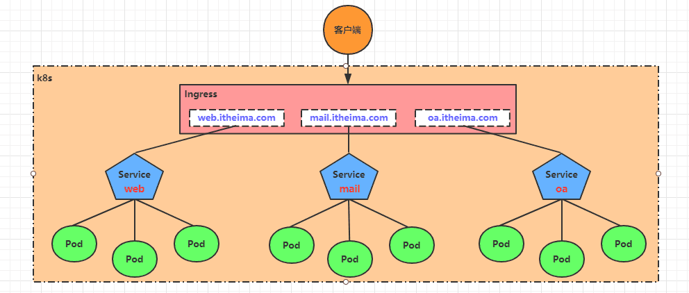
实际上，Ingress相当于一个7层的负载均衡器，是kubernetes对反向代理的一个抽象，它的工作原理类似于Nginx，可以理解成在Ingress里建立诸多映射规则，Ingress Controller通过监听这些配置规则并转化成Nginx的反向代理配置 , 然后对外部提供服务 。在这里有两个核心概念：
ingress：kubernetes中的一个对象，作用是定义请求如何转发到service的规则
ingress controller：具体实现反向代理及负载均衡的程序，对ingress定义的规则进行解析，根据配置的规则来实现请求转发，实现方式有很多，比如Nginx, Contour, Haproxy等等
Ingress（以Nginx为例）的工作原理如下：
用户编写Ingress规则，说明哪个域名对应kubernetes集群中的哪个Service
Ingress控制器动态感知Ingress服务规则的变化，然后生成一段对应的Nginx反向代理配置
Ingress控制器会将生成的Nginx配置写入到一个运行着的Nginx服务中，并动态更新
到此为止，其实真正在工作的就是一个Nginx了，内部配置了用户定义的请求转发规则
Ingress使用 环境准备 搭建ingress环境
1 2 3 4 5 6 7 8 9 10 11 12 13 14 15 16 17 18 19 20 21 22 23 [root @master ~] [root @master ~] [root @master ingress -controller ] [root @master ingress -controller ] [root @master ingress -controller ] [root @master ingress -controller ] NAME READY STATUS RESTARTS AGE pod/nginx-ingress-controller-fbf967dd5-4qpbp 1 /1 Running 0 12 h [root @master ingress -controller ] NAME TYPE CLUSTER-IP EXTERNAL-IP PORT(S) AGE ingress-nginx NodePort 10.98 .75.163 <none> 80 :32240 /TCP,443 :31335 /TCP 11 h
准备service和pod
为了后面的实验比较方便，创建如下图所示的模型
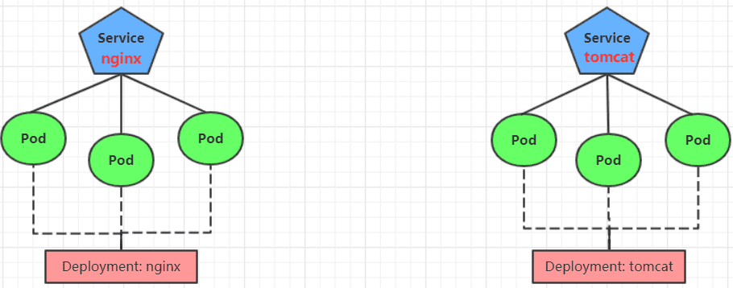
创建tomcat-nginx.yaml
1 2 3 4 5 6 7 8 9 10 11 12 13 14 15 16 17 18 19 20 21 22 23 24 25 26 27 28 29 30 31 32 33 34 35 36 37 38 39 40 41 42 43 44 45 46 47 48 49 50 51 52 53 54 55 56 57 58 59 60 61 62 63 64 65 66 67 68 69 70 71 72 73 74 75 apiVersion: apps/v1 kind: Deployment metadata: name: nginx-deployment namespace: dev spec: replicas: 3 selector: matchLabels: app: nginx-pod template: metadata: labels: app: nginx-pod spec: containers: - name: nginx image: nginx:1.17.1 ports: - containerPort: 80 --- apiVersion: apps/v1 kind: Deployment metadata: name: tomcat-deployment namespace: dev spec: replicas: 3 selector: matchLabels: app: tomcat-pod template: metadata: labels: app: tomcat-pod spec: containers: - name: tomcat image: tomcat:8.5-jre10-slim ports: - containerPort: 8080 --- apiVersion: v1 kind: Service metadata: name: nginx-service namespace: dev spec: selector: app: nginx-pod clusterIP: None type: ClusterIP ports: - port: 80 targetPort: 80 --- apiVersion: v1 kind: Service metadata: name: tomcat-service namespace: dev spec: selector: app: tomcat-pod clusterIP: None type: ClusterIP ports: - port: 8080 targetPort: 8080
1 2 3 4 5 6 7 8 [root @master ~] [root @master ~] NAME TYPE CLUSTER-IP EXTERNAL-IP PORT(S) AGE nginx-service ClusterIP None <none> 80 /TCP 48 s tomcat-service ClusterIP None <none> 8080 /TCP 48 s
Http代理 创建ingress-http.yaml
1 2 3 4 5 6 7 8 9 10 11 12 13 14 15 16 17 18 19 20 21 apiVersion: extensions/v1beta1 kind: Ingress metadata: name: ingress-http namespace: dev spec: rules: - host: nginx.itheima.com http: paths: - path: / backend: serviceName: nginx-service servicePort: 80 - host: tomcat.itheima.com http: paths: - path: / backend: serviceName: tomcat-service servicePort: 8080
1 2 3 4 5 6 7 8 9 10 11 12 13 14 15 16 17 18 19 20 21 [root @master ~] ingress.extensions/ingress-http created [root @master ~] NAME HOSTS ADDRESS PORTS AGE ingress-http nginx.itheima.com,tomcat.itheima.com 80 22 s [root @master ~] ... Rules: Host Path Backends ---- ---- -------- nginx.itheima.com / nginx-service :80 (10.244 .1.96 :80 ,10.244 .1.97 :80 ,10.244 .2.112 :80 ) tomcat.itheima.com / tomcat-service :8080 (10.244 .1.94 :8080 ,10.244 .1.95 :8080 ,10.244 .2.111 :8080 ) ...
Https代理 创建证书
1 2 3 4 5 openssl req -x509 -sha256 -nodes -days 365 -newkey rsa:2048 -keyout tls.key -out tls.crt -subj "/C=CN/ST=BJ/L=BJ/O=nginx/CN=itheima.com" kubectl create secret tls tls-secret --key tls.key --cert tls.crt
创建ingress-https.yaml
1 2 3 4 5 6 7 8 9 10 11 12 13 14 15 16 17 18 19 20 21 22 23 24 25 26 apiVersion: extensions/v1beta1 kind: Ingress metadata: name: ingress-https namespace: dev spec: tls: - hosts: - nginx.itheima.com - tomcat.itheima.com secretName: tls-secret rules: - host: nginx.itheima.com http: paths: - path: / backend: serviceName: nginx-service servicePort: 80 - host: tomcat.itheima.com http: paths: - path: / backend: serviceName: tomcat-service servicePort: 8080
1 2 3 4 5 6 7 8 9 10 11 12 13 14 15 16 17 18 19 20 21 22 [root @master ~] ingress.extensions/ingress-https created [root @master ~] NAME HOSTS ADDRESS PORTS AGE ingress-https nginx.itheima.com,tomcat.itheima.com 10.104 .184.38 80 , 443 2 m42s [root @master ~] ... TLS: tls-secret terminates nginx.itheima.com,tomcat.itheima.com Rules: Host Path Backends ---- ---- -------- nginx.itheima.com / nginx-service :80 (10.244 .1.97 :80 ,10.244 .1.98 :80 ,10.244 .2.119 :80 ) tomcat.itheima.com / tomcat-service :8080 (10.244 .1.99 :8080 ,10.244 .2.117 :8080 ,10.244 .2.120 :8080 ) ...
第八章 数据存储 在前面已经提到，容器的生命周期可能很短，会被频繁地创建和销毁。那么容器在销毁时，保存在容器中的数据也会被清除。这种结果对用户来说，在某些情况下是不乐意看到的。为了持久化保存容器的数据，kubernetes引入了Volume的概念。
Volume是Pod中能够被多个容器访问的共享目录，它被定义在Pod上，然后被一个Pod里的多个容器挂载到具体的文件目录下，kubernetes通过Volume实现同一个Pod中不同容器之间的数据共享以及数据的持久化存储。Volume的生命容器不与Pod中单个容器的生命周期相关，当容器终止或者重启时，Volume中的数据也不会丢失。
kubernetes的Volume支持多种类型，比较常见的有下面几个：
简单存储：EmptyDir、HostPath、NFS
高级存储：PV、PVC
配置存储：ConfigMap、Secret
基本存储 EmptyDir EmptyDir是最基础的Volume类型，一个EmptyDir就是Host上的一个空目录。
EmptyDir是在Pod被分配到Node时创建的，它的初始内容为空，并且无须指定宿主机上对应的目录文件，因为kubernetes会自动分配一个目录，当Pod销毁时， EmptyDir中的数据也会被永久删除。 EmptyDir用途如下：
接下来，通过一个容器之间文件共享的案例来使用一下EmptyDir。
在一个Pod中准备两个容器nginx和busybox，然后声明一个Volume分别挂在到两个容器的目录中，然后nginx容器负责向Volume中写日志，busybox中通过命令将日志内容读到控制台。
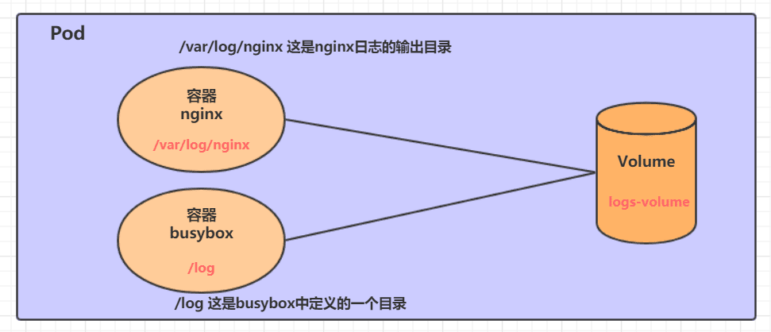
创建一个volume-emptydir.yaml
1 2 3 4 5 6 7 8 9 10 11 12 13 14 15 16 17 18 19 20 21 22 23 apiVersion: v1 kind: Pod metadata: name: volume-emptydir namespace: dev spec: containers: - name: nginx image: nginx:1.14-alpine ports: - containerPort: 80 volumeMounts: - name: logs-volume mountPath: /var/log/nginx - name: busybox image: busybox:1.30 command: ["/bin/sh" ,"-c" ,"tail -f /logs/access.log" ] volumeMounts: - name: logs-volume mountPath: /logs volumes: - name: logs-volume emptyDir: {}
1 2 3 4 5 6 7 8 9 10 11 12 13 14 15 16 [root @master ~] pod/volume-emptydir created [root @master ~] NAME READY STATUS RESTARTS AGE IP NODE ...... volume-emptydir 2 /2 Running 0 97 s 10.244 .1.100 node1 ...... [root @master ~] ...... [root @master ~] 10.244 .0.0 - - [13 /Apr /2020 :10 :58 :47 +0000 ] "GET / HTTP/1.1" 200 612 "-" "curl/7.29.0" "-"
HostPath 上节课提到，EmptyDir中数据不会被持久化，它会随着Pod的结束而销毁，如果想简单的将数据持久化到主机中，可以选择HostPath。
HostPath就是将Node主机中一个实际目录挂在到Pod中，以供容器使用，这样的设计就可以保证Pod销毁了，但是数据依据可以存在于Node主机上。
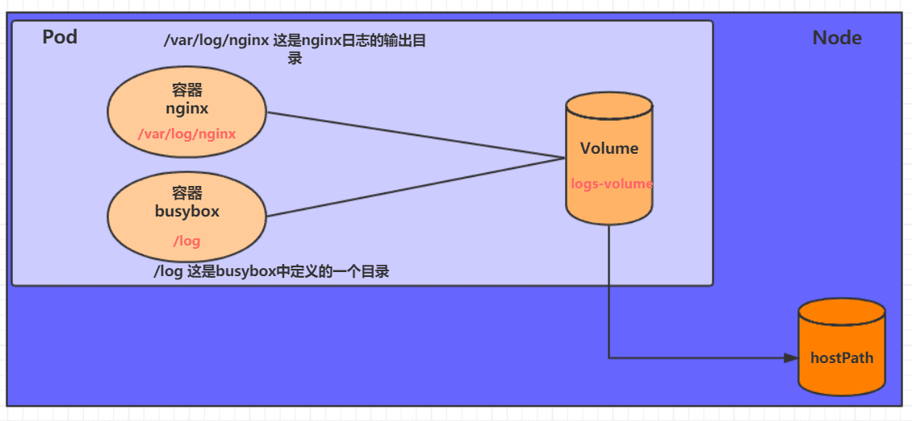
创建一个volume-hostpath.yaml：
1 2 3 4 5 6 7 8 9 10 11 12 13 14 15 16 17 18 19 20 21 22 23 24 25 apiVersion: v1 kind: Pod metadata: name: volume-hostpath namespace: dev spec: containers: - name: nginx image: nginx:1.17.1 ports: - containerPort: 80 volumeMounts: - name: logs-volume mountPath: /var/log/nginx - name: busybox image: busybox:1.30 command: ["/bin/sh" ,"-c" ,"tail -f /logs/access.log" ] volumeMounts: - name: logs-volume mountPath: /logs volumes: - name: logs-volume hostPath: path: /root/logs type: DirectoryOrCreate
1 2 3 4 5 6 7 8 关于type的值的一点说明： DirectoryOrCreate 目录存在就使用，不存在就先创建后使用 Directory 目录必须存在 FileOrCreate 文件存在就使用，不存在就先创建后使用 File 文件必须存在 Socket unix套接字必须存在 CharDevice 字符设备必须存在 BlockDevice 块设备必须存在
1 2 3 4 5 6 7 8 9 10 11 12 13 14 15 16 17 18 [root @master ~] pod/volume-hostpath created [root @master ~] NAME READY STATUS RESTARTS AGE IP NODE ...... pod-volume-hostpath 2 /2 Running 0 16 s 10.244 .1.104 node1 ...... [root @master ~] [root @node1 ~] access.log error.log
NFS HostPath可以解决数据持久化的问题，但是一旦Node节点故障了，Pod如果转移到了别的节点，又会出现问题了，此时需要准备单独的网络存储系统，比较常用的用NFS、CIFS。
NFS是一个网络文件存储系统，可以搭建一台NFS服务器，然后将Pod中的存储直接连接到NFS系统上，这样的话，无论Pod在节点上怎么转移，只要Node跟NFS的对接没问题，数据就可以成功访问。
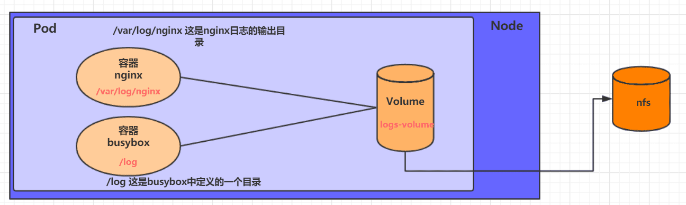
1）首先要准备nfs的服务器，这里为了简单，直接是master节点做nfs服务器
1 2 3 4 5 6 7 8 9 10 11 12 13 [root @master ~] [root @master ~] [root @master ~] [root @master ~] /root/data /nfs 192.168 .109.0 /24 (rw,no_root_squash) [root @master ~]
2）接下来，要在的每个node节点上都安装下nfs，这样的目的是为了node节点可以驱动nfs设备
3）接下来，就可以编写pod的配置文件了，创建volume-nfs.yaml
1 2 3 4 5 6 7 8 9 10 11 12 13 14 15 16 17 18 19 20 21 22 23 24 25 apiVersion: v1 kind: Pod metadata: name: volume-nfs namespace: dev spec: containers: - name: nginx image: nginx:1.17.1 ports: - containerPort: 80 volumeMounts: - name: logs-volume mountPath: /var/log/nginx - name: busybox image: busybox:1.30 command: ["/bin/sh" ,"-c" ,"tail -f /logs/access.log" ] volumeMounts: - name: logs-volume mountPath: /logs volumes: - name: logs-volume nfs: server: 192.168 .109 .100 path: /root/data/nfs
4）最后，运行下pod，观察结果
1 2 3 4 5 6 7 8 9 10 11 12 [root @master ~] pod/volume-nfs created [root @master ~] NAME READY STATUS RESTARTS AGE volume-nfs 2 /2 Running 0 2 m9s [root @master ~] access.log error.log
高级存储 PV和PVC 前面已经学习了使用NFS提供存储，此时就要求用户会搭建NFS系统，并且会在yaml配置nfs。由于kubernetes支持的存储系统有很多，要求客户全都掌握，显然不现实。为了能够屏蔽底层存储实现的细节，方便用户使用， kubernetes引入PV和PVC两种资源对象。
PV（Persistent Volume）是持久化卷的意思，是对底层的共享存储的一种抽象。一般情况下PV由kubernetes管理员进行创建和配置，它与底层具体的共享存储技术有关，并通过插件完成与共享存储的对接。
PVC（Persistent Volume Claim）是持久卷声明的意思，是用户对于存储需求的一种声明。换句话说，PVC其实就是用户向kubernetes系统发出的一种资源需求申请。
使用了PV和PVC之后，工作可以得到进一步的细分：
存储：存储工程师维护
PV： kubernetes管理员维护
PVC：kubernetes用户维护
PV PV是存储资源的抽象，下面是资源清单文件:
1 2 3 4 5 6 7 8 9 10 11 apiVersion: v1 kind: PersistentVolume metadata: name: pv2 spec: nfs: capacity: storage: 2Gi accessModes: storageClassName: persistentVolumeReclaimPolicy:
PV 的关键配置参数说明：
目前只支持存储空间的设置( storage=1Gi )，不过未来可能会加入IOPS、吞吐量等指标的配置
访问模式（accessModes）
用于描述用户应用对存储资源的访问权限，访问权限包括下面几种方式：
ReadWriteOnce（RWO）：读写权限，但是只能被单个节点挂载
ReadOnlyMany（ROX）： 只读权限，可以被多个节点挂载
ReadWriteMany（RWX）：读写权限，可以被多个节点挂载
需要注意的是，底层不同的存储类型可能支持的访问模式不同
回收策略（persistentVolumeReclaimPolicy）
当PV不再被使用了之后，对其的处理方式。目前支持三种策略：
Retain （保留） 保留数据，需要管理员手工清理数据
Recycle（回收） 清除 PV 中的数据，效果相当于执行 rm -rf /thevolume/*
Delete （删除） 与 PV 相连的后端存储完成 volume 的删除操作，当然这常见于云服务商的存储服务
需要注意的是，底层不同的存储类型可能支持的回收策略不同
存储类别
PV可以通过storageClassName参数指定一个存储类别
状态（status）
一个 PV 的生命周期中，可能会处于4中不同的阶段：
Available（可用）： 表示可用状态，还未被任何 PVC 绑定
Bound（已绑定）： 表示 PV 已经被 PVC 绑定
Released（已释放）： 表示 PVC 被删除，但是资源还未被集群重新声明
Failed（失败）： 表示该 PV 的自动回收失败
实验
使用NFS作为存储，来演示PV的使用，创建3个PV，对应NFS中的3个暴露的路径。
1) 准备NFS环境
1 2 3 4 5 6 7 8 9 10 11 [root @master ~] [root @master ~] /root/data /pv1 192.168 .109.0 /24 (rw,no_root_squash) /root/data /pv2 192.168 .109.0 /24 (rw,no_root_squash) /root/data /pv3 192.168 .109.0 /24 (rw,no_root_squash) [root @master ~]
2) 创建pv.yaml
1 2 3 4 5 6 7 8 9 10 11 12 13 14 15 16 17 18 19 20 21 22 23 24 25 26 27 28 29 30 31 32 33 34 35 36 37 38 39 40 41 42 43 44 45 apiVersion: v1 kind: PersistentVolume metadata: name: pv1 spec: capacity: storage: 1Gi accessModes: - ReadWriteMany persistentVolumeReclaimPolicy: Retain nfs: path: /root/data/pv1 server: 192.168 .109 .100 --- apiVersion: v1 kind: PersistentVolume metadata: name: pv2 spec: capacity: storage: 2Gi accessModes: - ReadWriteMany persistentVolumeReclaimPolicy: Retain nfs: path: /root/data/pv2 server: 192.168 .109 .100 --- apiVersion: v1 kind: PersistentVolume metadata: name: pv3 spec: capacity: storage: 3Gi accessModes: - ReadWriteMany persistentVolumeReclaimPolicy: Retain nfs: path: /root/data/pv3 server: 192.168 .109 .100
1 2 3 4 5 6 7 8 9 10 11 12 [root @master ~] persistentvolume/pv1 created persistentvolume/pv2 created persistentvolume/pv3 created [root @master ~] NAME CAPACITY ACCESS MODES RECLAIM POLICY STATUS AGE VOLUMEMODE pv1 1 Gi RWX Retain Available 10 s Filesystem pv2 2 Gi RWX Retain Available 10 s Filesystem pv3 3 Gi RWX Retain Available 9 s Filesystem
PVC PVC是资源的申请，用来声明对存储空间、访问模式、存储类别需求信息。下面是资源清单文件:
1 2 3 4 5 6 7 8 9 10 11 12 apiVersion: v1 kind: PersistentVolumeClaim metadata: name: pvc namespace: dev spec: accessModes: selector: storageClassName: resources: requests: storage: 5Gi
PVC 的关键配置参数说明：
用于描述用户应用对存储资源的访问权限
实验
1) 创建pvc.yaml，申请pv
1 2 3 4 5 6 7 8 9 10 11 12 13 14 15 16 17 18 19 20 21 22 23 24 25 26 27 28 29 30 31 32 33 34 35 36 37 38 39 apiVersion: v1 kind: PersistentVolumeClaim metadata: name: pvc1 namespace: dev spec: accessModes: - ReadWriteMany resources: requests: storage: 1Gi --- apiVersion: v1 kind: PersistentVolumeClaim metadata: name: pvc2 namespace: dev spec: accessModes: - ReadWriteMany resources: requests: storage: 1Gi --- apiVersion: v1 kind: PersistentVolumeClaim metadata: name: pvc3 namespace: dev spec: accessModes: - ReadWriteMany resources: requests: storage: 1Gi
1 2 3 4 5 6 7 8 9 10 11 12 13 14 15 16 17 18 19 [root @master ~] persistentvolumeclaim/pvc1 created persistentvolumeclaim/pvc2 created persistentvolumeclaim/pvc3 created [root @master ~] NAME STATUS VOLUME CAPACITY ACCESS MODES STORAGECLASS AGE VOLUMEMODE pvc1 Bound pv1 1 Gi RWX 15 s Filesystem pvc2 Bound pv2 2 Gi RWX 15 s Filesystem pvc3 Bound pv3 3 Gi RWX 15 s Filesystem [root @master ~] NAME CAPACITY ACCESS MODES RECLAIM POLICY STATUS CLAIM AGE VOLUMEMODE pv1 1 Gi RWx Retain Bound dev/pvc1 3 h37m Filesystem pv2 2 Gi RWX Retain Bound dev/pvc2 3 h37m Filesystem pv3 3 Gi RWX Retain Bound dev/pvc3 3 h37m Filesystem
2) 创建pods.yaml, 使用pv
1 2 3 4 5 6 7 8 9 10 11 12 13 14 15 16 17 18 19 20 21 22 23 24 25 26 27 28 29 30 31 32 33 34 35 36 37 apiVersion: v1 kind: Pod metadata: name: pod1 namespace: dev spec: containers: - name: busybox image: busybox:1.30 command: ["/bin/sh" ,"-c" ,"while true;do echo pod1 >> /root/out.txt; sleep 10; done;" ] volumeMounts: - name: volume mountPath: /root/ volumes: - name: volume persistentVolumeClaim: claimName: pvc1 readOnly: false --- apiVersion: v1 kind: Pod metadata: name: pod2 namespace: dev spec: containers: - name: busybox image: busybox:1.30 command: ["/bin/sh" ,"-c" ,"while true;do echo pod2 >> /root/out.txt; sleep 10; done;" ] volumeMounts: - name: volume mountPath: /root/ volumes: - name: volume persistentVolumeClaim: claimName: pvc2 readOnly: false
1 2 3 4 5 6 7 8 9 10 11 12 13 14 15 16 17 18 19 20 21 22 23 24 25 26 27 28 29 30 31 32 [root @master ~] pod/pod1 created pod/pod2 created [root @master ~] NAME READY STATUS RESTARTS AGE IP NODE pod1 1 /1 Running 0 14 s 10.244 .1.69 node1 pod2 1 /1 Running 0 14 s 10.244 .1.70 node1 [root @master ~] NAME STATUS VOLUME CAPACITY ACCESS MODES AGE VOLUMEMODE pvc1 Bound pv1 1 Gi RWX 94 m Filesystem pvc2 Bound pv2 2 Gi RWX 94 m Filesystem pvc3 Bound pv3 3 Gi RWX 94 m Filesystem [root @master ~] NAME CAPACITY ACCESS MODES RECLAIM POLICY STATUS CLAIM AGE VOLUMEMODE pv1 1 Gi RWX Retain Bound dev/pvc1 5 h11m Filesystem pv2 2 Gi RWX Retain Bound dev/pvc2 5 h11m Filesystem pv3 3 Gi RWX Retain Bound dev/pvc3 5 h11m Filesystem [root @master ~] node1 node1 [root @master ~] node2 node2
生命周期 PVC和PV是一一对应的，PV和PVC之间的相互作用遵循以下生命周期：
资源供应 ：管理员手动创建底层存储和PV
资源绑定 ：用户创建PVC，kubernetes负责根据PVC的声明去寻找PV，并绑定
在用户定义好PVC之后，系统将根据PVC对存储资源的请求在已存在的PV中选择一个满足条件的
PV一旦绑定到某个PVC上，就会被这个PVC独占，不能再与其他PVC进行绑定了
资源使用 ：用户可在pod中像volume一样使用pvc
Pod使用Volume的定义，将PVC挂载到容器内的某个路径进行使用。
资源释放 ：用户删除pvc来释放pv
当存储资源使用完毕后，用户可以删除PVC，与该PVC绑定的PV将会被标记为“已释放”，但还不能立刻与其他PVC进行绑定。通过之前PVC写入的数据可能还被留在存储设备上，只有在清除之后该PV才能再次使用。
资源回收 ：kubernetes根据pv设置的回收策略进行资源的回收
对于PV，管理员可以设定回收策略，用于设置与之绑定的PVC释放资源之后如何处理遗留数据的问题。只有PV的存储空间完成回收，才能供新的PVC绑定和使用
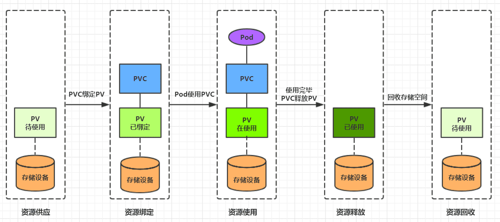
配置存储 ConfigMap ConfigMap是一种比较特殊的存储卷，它的主要作用是用来存储配置信息的。
创建configmap.yaml，内容如下：
1 2 3 4 5 6 7 8 9 apiVersion: v1 kind: ConfigMap metadata: name: configmap namespace: dev data: info: | username:admin password:123456
接下来，使用此配置文件创建configmap
1 2 3 4 5 6 7 8 9 10 11 12 13 14 15 16 17 18 19 [root @master ~] configmap/configmap created [root @master ~] Name: configmap Namespace: dev Labels: <none> Annotations: <none> Data ==== info: ---- username:admin password:123456 Events: <none>
接下来创建一个pod-configmap.yaml，将上面创建的configmap挂载进去
1 2 3 4 5 6 7 8 9 10 11 12 13 14 15 16 apiVersion: v1 kind: Pod metadata: name: pod-configmap namespace: dev spec: containers: - name: nginx image: nginx:1.17.1 volumeMounts: - name: config mountPath: /configmap/config volumes: - name: config configMap: name: configmap
1 2 3 4 5 6 7 8 9 10 11 12 13 14 15 16 17 18 19 20 21 [root @master ~] pod/pod-configmap created [root @master ~] NAME READY STATUS RESTARTS AGE pod-configmap 1 /1 Running 0 6 s [root @master ~] info username:admin password:123456
Secret 在kubernetes中，还存在一种和ConfigMap非常类似的对象，称为Secret对象。它主要用于存储敏感信息，例如密码、秘钥、证书等等。
1) 首先使用base64对数据进行编码
1 2 3 4 [root@master ~ ] YWRtaW4= [root@master ~ ] MTIzNDU2
2) 接下来编写secret.yaml，并创建Secret
1 2 3 4 5 6 7 8 9 apiVersion: v1 kind: Secret metadata: name: secret namespace: dev type: Opaque data: username: YWRtaW4= password: MTIzNDU2
1 2 3 4 5 6 7 8 9 10 11 12 13 14 15 [root @master ~] secret/secret created [root @master ~] Name: secret Namespace: dev Labels: <none> Annotations: <none> Type : OpaqueData ==== password: 6 bytes username: 5 bytes
3) 创建pod-secret.yaml，将上面创建的secret挂载进去：
1 2 3 4 5 6 7 8 9 10 11 12 13 14 15 16 apiVersion: v1 kind: Pod metadata: name: pod-secret namespace: dev spec: containers: - name: nginx image: nginx:1.17.1 volumeMounts: - name: config mountPath: /secret/config volumes: - name: config secret: secretName: secret
1 2 3 4 5 6 7 8 9 10 11 12 13 14 15 16 17 [root @master ~] pod/pod-secret created [root @master ~] NAME READY STATUS RESTARTS AGE pod-secret 1 /1 Running 0 2 m28s [root @master ~] / password username / admin / 123456
至此，已经实现了利用secret实现了信息的编码。
第九章 安全认证 本章节主要介绍Kubernetes的安全认证机制。
访问控制概述 Kubernetes作为一个分布式集群的管理工具，保证集群的安全性是其一个重要的任务。所谓的安全性其实就是保证对Kubernetes的各种客户端 进行认证和鉴权 操作。
客户端
在Kubernetes集群中，客户端通常有两类：
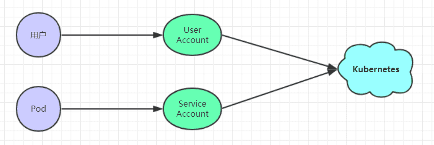
认证、授权与准入控制
ApiServer是访问及管理资源对象的唯一入口。任何一个请求访问ApiServer，都要经过下面三个流程：
Authentication（认证）：身份鉴别，只有正确的账号才能够通过认证
Authorization（授权）： 判断用户是否有权限对访问的资源执行特定的动作
Admission Control（准入控制）：用于补充授权机制以实现更加精细的访问控制功能。
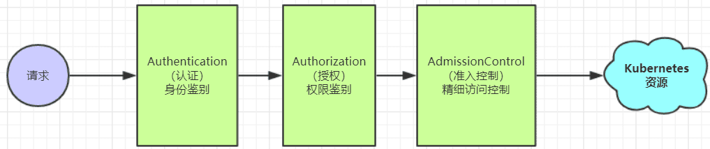
认证管理 Kubernetes集群安全的最关键点在于如何识别并认证客户端身份，它提供了3种客户端身份认证方式：
HTTP Base认证：通过用户名+密码的方式认证
1 这种认证方式是把“用户名:密码”用BASE64算法进行编码后的字符串放在HTTP请求中的Header Authorization域里发送给服务端。服务端收到后进行解码，获取用户名及密码，然后进行用户身份认证的过程。
HTTP Token认证：通过一个Token来识别合法用户
1 这种认证方式是用一个很长的难以被模仿的字符串--Token来表明客户身份的一种方式。每个Token对应一个用户名，当客户端发起API调用请求时，需要在HTTP Header里放入Token，API Server接到Token后会跟服务器中保存的token进行比对，然后进行用户身份认证的过程。
HTTPS证书认证：基于CA根证书签名的双向数字证书认证方式
1 这种认证方式是安全性最高的一种方式，但是同时也是操作起来最麻烦的一种方式。
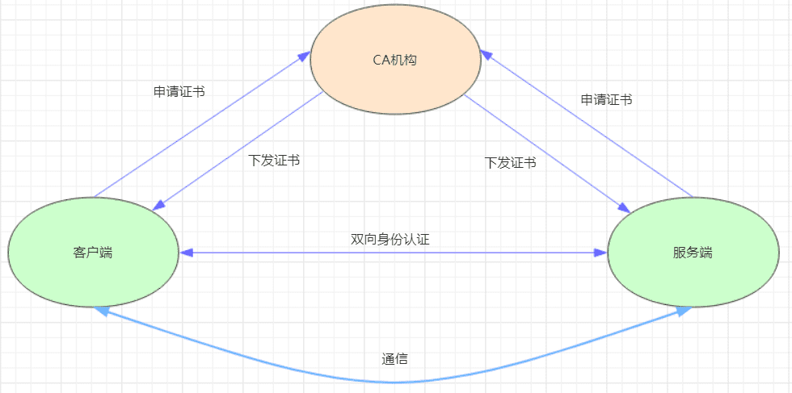
HTTPS认证大体分为3个过程：
证书申请和下发
1 HTTPS通信双方的服务器向CA机构申请证书，CA机构下发根证书、服务端证书及私钥给申请者
客户端和服务端的双向认证
1 2 3 4 5 1> 客户端向服务器端发起请求，服务端下发自己的证书给客户端， 客户端接收到证书后，通过私钥解密证书，在证书中获得服务端的公钥， 客户端利用服务器端的公钥认证证书中的信息，如果一致，则认可这个服务器 2> 客户端发送自己的证书给服务器端，服务端接收到证书后，通过私钥解密证书， 在证书中获得客户端的公钥，并用该公钥认证证书信息，确认客户端是否合法
服务器端和客户端进行通信
1 2 服务器端和客户端协商好加密方案后，客户端会产生一个随机的秘钥并加密，然后发送到服务器端。 服务器端接收这个秘钥后，双方接下来通信的所有内容都通过该随机秘钥加密
注意: Kubernetes允许同时配置多种认证方式，只要其中任意一个方式认证通过即可
授权管理 授权发生在认证成功之后，通过认证就可以知道请求用户是谁， 然后Kubernetes会根据事先定义的授权策略来决定用户是否有权限访问，这个过程就称为授权。
每个发送到ApiServer的请求都带上了用户和资源的信息：比如发送请求的用户、请求的路径、请求的动作等，授权就是根据这些信息和授权策略进行比较，如果符合策略，则认为授权通过，否则会返回错误。
API Server目前支持以下几种授权策略：
AlwaysDeny：表示拒绝所有请求，一般用于测试
AlwaysAllow：允许接收所有请求，相当于集群不需要授权流程（Kubernetes默认的策略）
ABAC：基于属性的访问控制，表示使用用户配置的授权规则对用户请求进行匹配和控制
Webhook：通过调用外部REST服务对用户进行授权
Node：是一种专用模式，用于对kubelet发出的请求进行访问控制
RBAC：基于角色的访问控制（kubeadm安装方式下的默认选项）
RBAC(Role-Based Access Control) 基于角色的访问控制，主要是在描述一件事情：给哪些对象授予了哪些权限
其中涉及到了下面几个概念：
对象：User、Groups、ServiceAccount
角色：代表着一组定义在资源上的可操作动作(权限)的集合
绑定：将定义好的角色跟用户绑定在一起
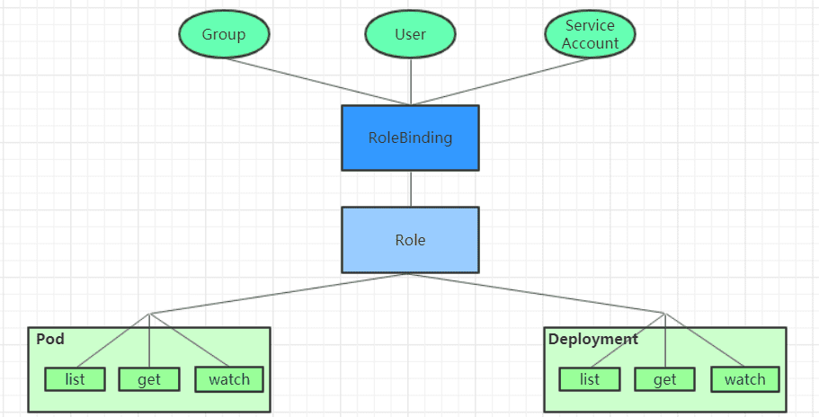
RBAC引入了4个顶级资源对象：
Role、ClusterRole：角色，用于指定一组权限
RoleBinding、ClusterRoleBinding：角色绑定，用于将角色（权限）赋予给对象
Role、ClusterRole
一个角色就是一组权限的集合，这里的权限都是许可形式的（白名单）。
1 2 3 4 5 6 7 8 9 10 kind: Role apiVersion: rbac.authorization.k8s.io/v1beta1 metadata: namespace: dev name: authorization-role rules: - apiGroups: ["" ] resources: ["pods" ] verbs: ["get" , "watch" , "list" ]
1 2 3 4 5 6 7 8 9 kind: ClusterRole apiVersion: rbac.authorization.k8s.io/v1beta1 metadata: name: authorization-clusterrole rules: - apiGroups: ["" ] resources: ["pods" ] verbs: ["get" , "watch" , "list" ]
需要详细说明的是，rules中的参数：
apiGroups: 支持的API组列表
1 "" ,"apps" , "autoscaling" , "batch"
resources：支持的资源对象列表
1 2 3 "services" , "endpoints" , "pods" ,"secrets" ,"configmaps" ,"crontabs" ,"deployments" ,"jobs" ,"nodes" ,"rolebindings" ,"clusterroles" ,"daemonsets" ,"replicasets" ,"statefulsets" ,"horizontalpodautoscalers" ,"replicationcontrollers" ,"cronjobs"
verbs：对资源对象的操作方法列表
1 "get" , "list" , "watch" , "create" , "update" , "patch" , "delete" , "exec"
RoleBinding、ClusterRoleBinding
角色绑定用来把一个角色绑定到一个目标对象上，绑定目标可以是User、Group或者ServiceAccount。
1 2 3 4 5 6 7 8 9 10 11 12 13 14 kind: RoleBinding apiVersion: rbac.authorization.k8s.io/v1beta1 metadata: name: authorization-role-binding namespace: dev subjects: - kind: User name: heima apiGroup: rbac.authorization.k8s.io roleRef: kind: Role name: authorization-role apiGroup: rbac.authorization.k8s.io
1 2 3 4 5 6 7 8 9 10 11 12 13 kind: ClusterRoleBinding apiVersion: rbac.authorization.k8s.io/v1beta1 metadata: name: authorization-clusterrole-binding subjects: - kind: User name: heima apiGroup: rbac.authorization.k8s.io roleRef: kind: ClusterRole name: authorization-clusterrole apiGroup: rbac.authorization.k8s.io
RoleBinding引用ClusterRole进行授权
RoleBinding可以引用ClusterRole，对属于同一命名空间内ClusterRole定义的资源主体进行授权。
1 一种很常用的做法就是，集群管理员为集群范围预定义好一组角色（ClusterRole），然后在多个命名空间中重复使用这些ClusterRole。这样可以大幅提高授权管理工作效率，也使得各个命名空间下的基础性授权规则与使用体验保持一致。
1 2 3 4 5 6 7 8 9 10 11 12 13 14 15 kind: RoleBinding apiVersion: rbac.authorization.k8s.io/v1beta1 metadata: name: authorization-role-binding-ns namespace: dev subjects: - kind: User name: heima apiGroup: rbac.authorization.k8s.io roleRef: kind: ClusterRole name: authorization-clusterrole apiGroup: rbac.authorization.k8s.io
实战：创建一个只能管理dev空间下Pods资源的账号
1) 创建账号
1 2 3 4 5 6 7 8 9 10 11 12 13 14 15 16 17 18 19 20 21 22 23 24 25 26 27 28 [root @master pki ] [root @master pki ] [root @master pki ] [root @master pki ] [root @master pki ] [root @master pki ] [root @master pki ] [root @master pki ] Switched to context "devman@kubernetes" . [root @master pki ] Error from server (Forbidden): pods is forbidden: User "devman" cannot list resource "pods" in API group "" in the namespace "dev" [root @master pki ] Switched to context "kubernetes-admin@kubernetes" .
2） 创建Role和RoleBinding，为devman用户授权
1 2 3 4 5 6 7 8 9 10 11 12 13 14 15 16 17 18 19 20 21 22 23 24 25 kind: Role apiVersion: rbac.authorization.k8s.io/v1beta1 metadata: namespace: dev name: dev-role rules: - apiGroups: ["" ] resources: ["pods" ] verbs: ["get" , "watch" , "list" ] --- kind: RoleBinding apiVersion: rbac.authorization.k8s.io/v1beta1 metadata: name: authorization-role-binding namespace: dev subjects: - kind: User name: devman apiGroup: rbac.authorization.k8s.io roleRef: kind: Role name: dev-role apiGroup: rbac.authorization.k8s.io
1 2 3 [root @master pki ] role.rbac.authorization.k8s.io/dev-role created rolebinding.rbac.authorization.k8s.io/authorization-role-binding created
3) 切换账户，再次验证
1 2 3 4 5 6 7 8 9 10 11 12 13 14 [root @master pki ] Switched to context "devman@kubernetes" . [root @master pki ] NAME READY STATUS RESTARTS AGE nginx-deployment-66cb59b984-8wp2k 1 /1 Running 0 4 d1h nginx-deployment-66cb59b984-dc46j 1 /1 Running 0 4 d1h nginx-deployment-66cb59b984-thfck 1 /1 Running 0 4 d1h [root @master pki ] Switched to context "kubernetes-admin@kubernetes" .
准入控制 通过了前面的认证和授权之后，还需要经过准入控制处理通过之后，apiserver才会处理这个请求。
准入控制是一个可配置的控制器列表，可以通过在Api-Server上通过命令行设置选择执行哪些准入控制器：
1 2 --admission-control =NamespaceLifecycle,LimitRanger,ServiceAccount,PersistentVolumeLabel, DefaultStorageClass,ResourceQuota,DefaultTolerationSeconds
只有当所有的准入控制器都检查通过之后，apiserver才执行该请求，否则返回拒绝。
当前可配置的Admission Control准入控制如下：
AlwaysAdmit：允许所有请求
AlwaysDeny：禁止所有请求，一般用于测试
AlwaysPullImages：在启动容器之前总去下载镜像
DenyExecOnPrivileged：它会拦截所有想在Privileged Container上执行命令的请求
ImagePolicyWebhook：这个插件将允许后端的一个Webhook程序来完成admission controller的功能。
Service Account：实现ServiceAccount实现了自动化
SecurityContextDeny：这个插件将使用SecurityContext的Pod中的定义全部失效
ResourceQuota：用于资源配额管理目的，观察所有请求，确保在namespace上的配额不会超标
LimitRanger：用于资源限制管理，作用于namespace上，确保对Pod进行资源限制
InitialResources：为未设置资源请求与限制的Pod，根据其镜像的历史资源的使用情况进行设置
NamespaceLifecycle：如果尝试在一个不存在的namespace中创建资源对象，则该创建请求将被拒绝。当删除一个namespace时，系统将会删除该namespace中所有对象。
DefaultStorageClass：为了实现共享存储的动态供应，为未指定StorageClass或PV的PVC尝试匹配默认的StorageClass，尽可能减少用户在申请PVC时所需了解的后端存储细节
DefaultTolerationSeconds：这个插件为那些没有设置forgiveness tolerations并具有notready:NoExecute和unreachable:NoExecute两种taints的Pod设置默认的“容忍”时间，为5min
PodSecurityPolicy：这个插件用于在创建或修改Pod时决定是否根据Pod的security context和可用的PodSecurityPolicy对Pod的安全策略进行控制
第十章 DashBoard 之前在kubernetes中完成的所有操作都是通过命令行工具kubectl完成的。其实，为了提供更丰富的用户体验，kubernetes还开发了一个基于web的用户界面（Dashboard）。用户可以使用Dashboard部署容器化的应用，还可以监控应用的状态，执行故障排查以及管理kubernetes中各种资源。
部署Dashboard 1) 下载yaml，并运行Dashboard
1 2 3 4 5 6 7 8 9 10 11 12 13 14 15 16 17 18 19 20 21 22 23 24 25 26 27 28 29 30 31 32 [root @master ~] kind: Service apiVersion: v1 metadata: labels: k8s-app : kubernetes-dashboard name: kubernetes-dashboard namespace: kubernetes-dashboard spec: type : NodePort ports: - port: 443 targetPort: 8443 nodePort: 30009 selector: k8s-app : kubernetes-dashboard [root @master ~] [root @master ~] NAME READY STATUS RESTARTS AGE pod/dashboard-metrics-scraper-c79c65bb7-zwfvw 1 /1 Running 0 111 s pod/kubernetes-dashboard-56484d4c5-z95z5 1 /1 Running 0 111 s NAME TYPE CLUSTER-IP EXTERNAL-IP PORT(S) AGE service/dashboard-metrics-scraper ClusterIP 10.96 .89.218 <none> 8000 /TCP 111 s service/kubernetes-dashboard NodePort 10.104 .178.171 <none> 443 :30009 /TCP 111 s
2）创建访问账户，获取token
1 2 3 4 5 6 7 8 9 10 11 12 13 14 15 16 17 18 19 20 21 22 23 24 [root @master -1 ~] [root @master -1 ~] [root @master ~] dashboard-admin-token-xbqhh kubernetes.io/service-account-token 3 2 m35s [root @master ~] Name: dashboard-admin-token-xbqhh Namespace: kubernetes-dashboard Labels: <none> Annotations: kubernetes.io/service-account .name: dashboard-admin kubernetes.io/service-account .uid: 95 d84d80-be7a-4d10-a2e0-68f90222d039 Type : kubernetes.io/service-account-token Data ==== namespace: 20 bytes token: eyJhbGciOiJSUzI1NiIsImtpZCI6ImJrYkF4bW5XcDhWcmNGUGJtek5NODFuSXl1aWptMmU2M3o4LTY5a2FKS2cifQ.eyJpc3MiOiJrdWJlcm5ldGVzL3NlcnZpY2VhY2NvdW50Iiwia3ViZXJuZXRlcy5pby9zZXJ2aWNlYWNjb3VudC9uYW1lc3BhY2UiOiJrdWJlcm5ldGVzLWRhc2hib2FyZCIsImt1YmVybmV0ZXMuaW8vc2VydmljZWFjY291bnQvc2VjcmV0Lm5hbWUiOiJkYXNoYm9hcmQtYWRtaW4tdG9rZW4teGJxaGgiLCJrdWJlcm5ldGVzLmlvL3NlcnZpY2VhY2NvdW50L3NlcnZpY2UtYWNjb3VudC5uYW1lIjoiZGFzaGJvYXJkLWFkbWluIiwia3ViZXJuZXRlcy5pby9zZXJ2aWNlYWNjb3VudC9zZXJ2aWNlLWFjY291bnQudWlkIjoiOTVkODRkODAtYmU3YS00ZDEwLWEyZTAtNjhmOTAyMjJkMDM5Iiwic3ViIjoic3lzdGVtOnNlcnZpY2VhY2NvdW50Omt1YmVybmV0ZXMtZGFzaGJvYXJkOmRhc2hib2FyZC1hZG1pbiJ9.NAl7e8ZfWWdDoPxkqzJzTB46sK9E8iuJYnUI9vnBaY3Jts7T1g1msjsBnbxzQSYgAG--cV0WYxjndzJY_UWCwaGPrQrt_GunxmOK9AUnzURqm55GR2RXIZtjsWVP2EBatsDgHRmuUbQvTFOvdJB4x3nXcYLN2opAaMqg3rnU2rr-A8zCrIuX_eca12wIp_QiuP3SF-tzpdLpsyRfegTJZl6YnSGyaVkC9id-cxZRb307qdCfXPfCHR_2rt5FVfxARgg_C0e3eFHaaYQO7CitxsnIoIXpOFNAR8aUrmopJyODQIPqBWUehb7FhlU1DCduHnIIXVC_UICZ-MKYewBDLw ca.crt: 1025 bytes
3）通过浏览器访问Dashboard的UI
在登录页面上输入上面的token
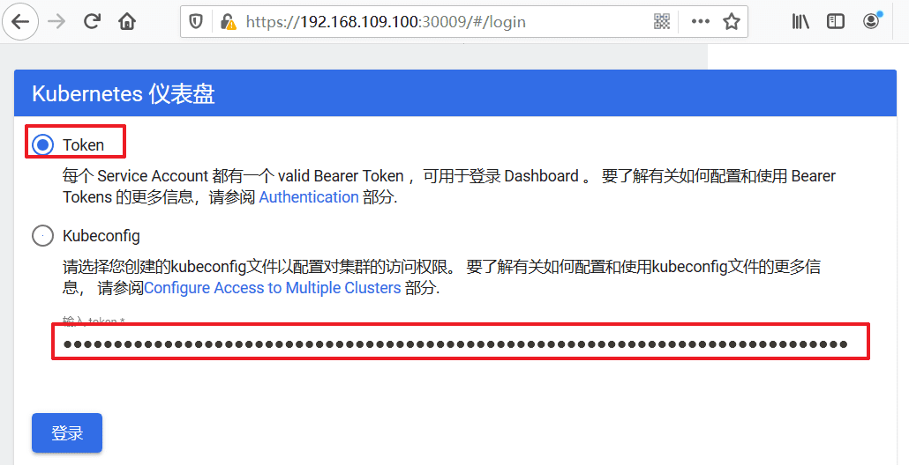
出现下面的页面代表成功
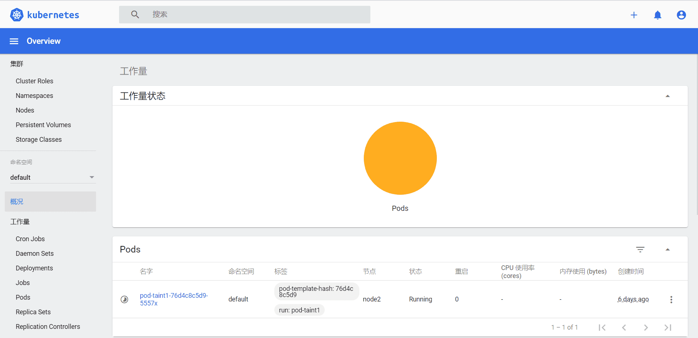
使用DashBoard 本章节以Deployment为例演示DashBoard的使用
查看
选择指定的命名空间dev，然后点击Deployments，查看dev空间下的所有deployment
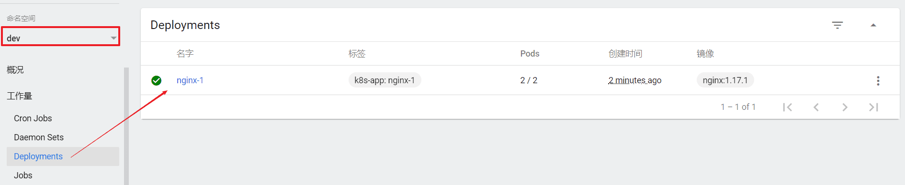
扩缩容
在Deployment上点击规模，然后指定目标副本数量，点击确定
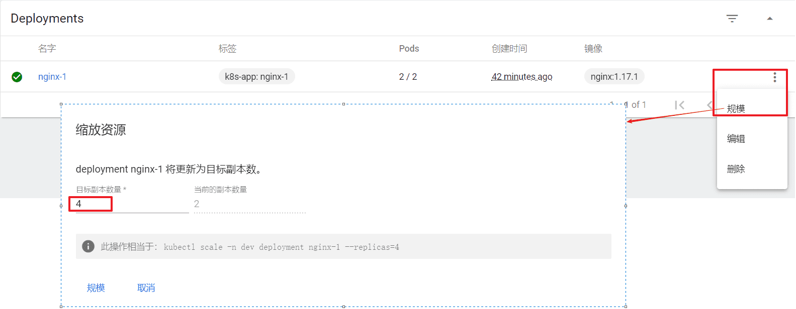
编辑
在Deployment上点击编辑，然后修改yaml文件，点击确定
查看Pod
点击Pods, 查看pods列表
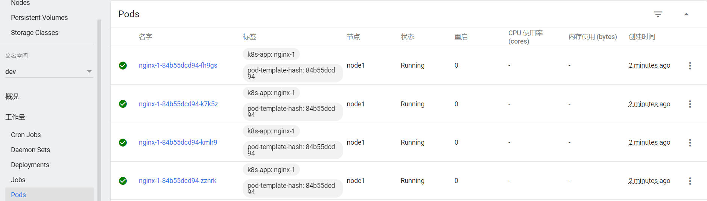
操作Pod
选中某个Pod，可以对其执行日志（logs）、进入执行（exec）、编辑、删除操作
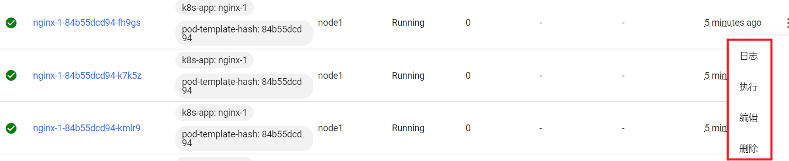
Dashboard提供了kubectl的绝大部分功能，这里不再一一演示